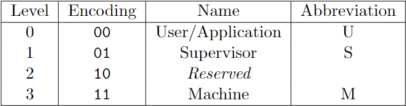
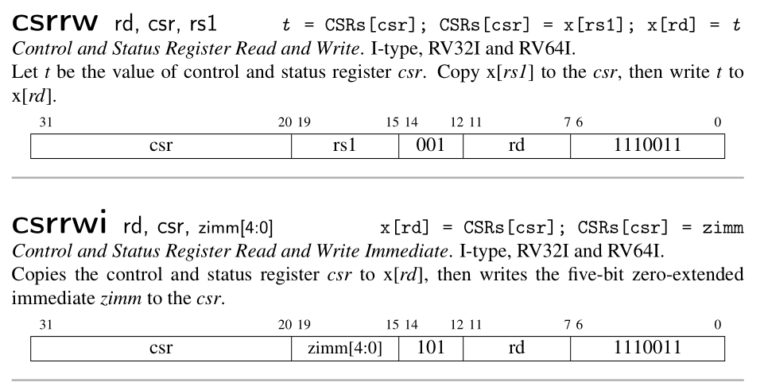
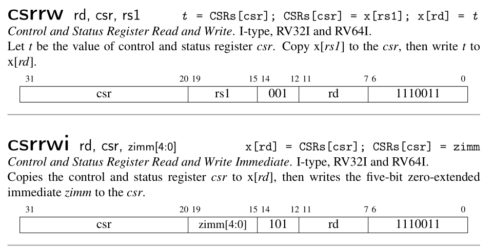
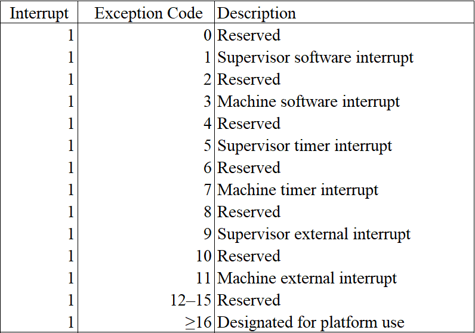

Rare: Rust A Riscv Emulator
RISC-V 模拟器教程
This tutorial is based on Asami's excellent tutorial. Although the author haven't finished it, she have already separated the code into 10 stages, which makes this tutorial become possible.
When you complete this tutorial, the emulator is able to run xv6, a UNIX-like operation system running on RISC-V.
I am planning to follow her code build the emulator step by step. When finished, I will write a complete tutorial to help reader to get the details. My tutorial will use the same tool mdbook as the original author, to build.
- Project: Github Rare
- Tutorial: Github.io Rare
本教程基于Asami 所写的模拟器教程。虽然作者只写到第三章，但她已经事先将所有的代码划分成了十个章节。所以看着代码也能够一步一步地构建出这个模拟器。
最终的模拟器可以运行 xv6 操作系统。
我的计划是：跟着她的代码和教程一步一步地做出这个模拟器，然后写一个系列完整的中文教程加以说明。该教程与原作一样，使用mdbook构建。
- 项目地址：Github Rare
- 在线教程：Github.io Rare
Prerequisite
前置
This tutorial assumes readers already have been familiar with Rust and RISC-V. If not, you might want to read the following materials to learn about RISC-V.
本教程假设读者已经对 Rust 和 Riscv 有一定的了解，因此教程中不会对 Rust & Riscv 作过多的解释，而是专注于模拟器本身。推荐通过阅读以下资料来了解 Riscv。
For Rust, you can read the book after you have installed the toolchain. Open your terminal and type rustup docs, your browser will open a new page for you to navigate to the book and other docs.
至于 Rust，安装好环境之后，可以通过运行 rustup docs 来访问the book以及 Rust 文档。
Develop envrionment
开发环境
- Linux / WSL
We nned the clang toolchain to generate some files used in testing. You can download the precompiled version from here. The version I used is clang-12.
我们需要用到 clang 的工具来生成测试的二进制文件，可以从LLVM官网下载预编译版本。我使用的版本是 clang-12，更新的版本应该也可以。
How to use
- clone this project
- use
cd Rare/book && mdbook serveto open this tutorial locally - use
git pullto update when needed
推荐的使用方法
- clone 该项目到本地
- cd Rare/book && mdbook serve 打开本地教程
- 需要的时候，使用 git pull 更新
Catelogue
目录
- Adder 加法器
- Memory and Bus 内存和总线
- Control Status Register 控制状态寄存器
- Privilege Mode 特权模式
- Exception 异常
- PLIC & CLINT
- UART
- Interrupt 中断
- Virtio
- Page Table 页表
The original author separate the tutorial into two parts: Hardware and ISA. I have merged them here.
原作者划分了硬件和 ISA 指令集两部分内容，我觉得合并成一个更适合，所以进行了合并。
Note
When you travel through this tutorial, sometimes, you may notice some code in current chapter is different from last one's. This is because I will do some refactor when needed. Welcome to open an issue on github if you have any questions.
实践的过程中，读者可能会发现本章的部分代码与上一章的不一样。这是因为我在编写的过程中会适当地进行重构。如有任何疑惑，欢迎在项目上提 issue。
Adder
CPU (Center Process Unit) is one of the core components of a computer. But in this chapter, we will use CPU to denote the whole computer, including 32 common integer registers, a program counter register and a DARM (dynamic random-access memory). In next chapter, we will use bus to connect memory and CPU.
This chapter corresponds to the first chapter CPU with Two instructions of the original tutorial by Asami. When finished, our CPU is able to run two instructions: add and addi.
CPU 指中心处理单元（Center Process Unit），是一块小小的芯片。它是计算机（computer）最核心的部分。
不过，为了简单起见，第一节的 CPU 代指的是整个计算机，它包含了 32 个通用寄存器、一个 PC 寄存器和一块内存。在下一节，我们会将内存移出 CPU。
本节对应原作者的第一节，CPU with Two instructions。这一节的 CPU 只能执行 add 和 addi 两个指令。
1. Basic CPU
Let's define our CPU as follow: It consist of a 64-bit pc register, 32 64-bit integer registers and a DRAM as a vector of u8.
首先定义 CPU 的结构，它包括一个 64 位的 PC，32 个 64 位的通用整数寄存器以及一个用 u8 向量表示的内存。
main.rs
struct Cpu {
// RISC-V has 32 registers
regs: [u64; 32],
// pc register contains the memory address of next instruction
pc: u64,
// memory, a byte-array. There is no memory in real CPU.
dram: Vec<u8>,
}
We need to define the size of memory to initialize our CPU. Since the stack pointer register sp (aka x2) should point to the top address of DRAM. We initialize the pc to 0, means we will start fetch instruction from address 0.
我们需要定义内存的大小来初始化 CPU，因为栈指针 (SP) 需要指向栈顶（内存的最高地址），同时，我们将 PC 置 0，意味着我们的程序将从内存地址 0 处开始执行。
main.rs
// init memory as 128MB
pub const DRAM_SIZE: u64 = 1024 * 1024 * 128;
struct Cpu { ... }
impl Cpu {
fn new(code: Vec<u8>) -> Self {
let mut regs = [0; 32];
regs[2] = DRAM_SIZE - 1;
Self {regs, pc: 0, dram: code}
}
}
2. CPU pipeline
Modern CPU spills its execution procedure into several stages to improve throughput and performance. Here is the classic MIPS five-stage pipeline. It consists of:
- fetch: fetch instruction from memory according to the value of
pcregister. - decode: decode instruction so the CPU knows how to execute it.
- execute: do some computation and get the result.
- memory access: store value into memory if necessary.
- write back: update PC and register file.
CPU do such things again and again.
现代CPU通过将其工作流程划分成多个子过程，以提升其吞吐量和性能。经典的 MIPS 流水线架构包含以下五个部分
- 取指：根据
pc值读取内存中的指令 (fetch) - 解码：解码指令 (decode)
- 执行：执行指令 (execute)
- 访存：将结果写回内存 (memory access)
- 写回：将运算结果（包括新的PC值）写回寄存器 (write back)
周而复始。
classic MIPS Pipeline
3. Instruction fetch
Let's implement the fetch stage firstly.
首先是取指的实现。
main.rs
impl Cpu {
// ...
fn fetch(&self) -> u32 {
let index = self.pc as usize;
let inst = self.dram[index] as u32
| ((self.dram[index + 1] as u32) << 8)
| ((self.dram[index + 2] as u32) << 16)
| ((self.dram[index + 3] as u32) << 24);
return inst;
}
}
CPU use pc as a base address to fetch 4 continous bytes from DRAM, since RISC-V instruction is 32-bit. Here, we read the u8 on [pc, pc+1, pc+2, pc+3] and build up a u32. What we should be careful is the endianness, which is the term refers to how binary data is stored. There are two types of endianness: little-endianness and big-endianness.
For a multi-byte value, little-endianness stores the least-significant byte at the lowest address and the most-significant byte at the highest address, while big-endianness does the opposite.
In our emulator, we will adopt little-endianness. Although RISC-V supports endianness settings for memory operation, instructions are uniformly little-endian for the benefit of both hardware and software. See RISC-V-Privileged section 3.1.6.4.
CPU 将pc的值发送给内存，内存返回对应的地址上的值。由于 RISC-V 指令是 32 位的，因此，内存需要读取的是 [pc, pc+1, pc+2, pc+3] 这四个地址上的值，并组合成一个 32 位的指令。这里有一个大端字节序 (big-endian) 与小端字节序 (small-endian) 的问题。
小端字节序指的是，一个由多个字节组成的数，它的最低位字节存储于内存中的低地址处，最高位字节存储于内存中的高地址处。大端则与之相反。
在本实现中，我们采用小端字节序。在 RISC-V 标准中，指令读取是小端字节序，而内存的加载和储存（memory load and store）则可以通过设置mstatus寄存器上特定的位来控制字节序。

Picture from original author
4. Instruction decode
The next stage is instruction decode. In real hardware with pipeline, decoding is a separate step. CPU will fetch next instruction while decoding the current one. But in our emulator, we will simpify these stages by merging decode stage, execute stage and memory access stage into a function execute.
There are four basic encoding format in RISC-V. (There are six if we count for the another two variants.)
读取指令后就要进行解码。在实际的硬件中，解码是一个独立的步骤，芯片会同时读取和解码多个指令 (pipeline parallel) 以提高运行速度。但在我们的模拟器中，一次只读一个指令，可以将这两部分合并在一起。
我们先看解码过程。Riscv 目前有四种基本的指令编码格式（包含变体共有6种），

Picture from original author
现在我们的 CPU 只执行add、addi，它们的功能说明和指令格式如下：

Picture from RISC-V Reader
Designers of RISC-V choose the encoding types carefully to simplify hardware design. All the instructions are 32-bit and the register index is encoding into the same position of different type, which explains why the immediate is spilled into several part in some type.
When implementing, we can firstly decode the instruction as R-type, then decode other information in specific context when necessary. For example, we will decode imm of addi in its decoding branch.
RISC-V 的设计者出于简化硬件的考虑，将所有的指令编码设计成整齐的 32 位长度。寄存器的编码也尽可能地位于相同的位置，这也是为什么立即数会被切分成多个部分进行编码的原因。
因为各个指令格式都有相同的部分，我们不妨先按 R-type 进行解码。对于其他的类型，则在其具体的分支中进一步解码。比如说，addi的imm将会在它的处理分支中进行解码。
main.rs
impl Cpu {
// ...
fn execute(&mut self, inst: u32) {
// decode as R-type
let opcode = inst & 0x7f;
let rd = ((inst >> 7) & 0x1f) as usize;
let rs1 = ((inst >> 15) & 0x1f) as usize;
let rs2 = ((inst >> 20) & 0x1f) as usize;
let funct3 = (inst >> 12) & 0x7;
let funct7 = (inst >> 25) & 0x7f;
// x0 is hardwired zero
self.regs[0] = 0;
// execute stage
match opcode {
0x13 => {
// addi
let imm = ((inst & 0xfff0_0000) as i64 >> 20) as u64;
self.regs[rd] = self.regs[rs1].wrapping_add(imm);
}
0x33 => {
// add
self.regs[rd] = self.regs[rs1].wrapping_add(self.regs[rs2]);
}
_ => {
dbg!(format!("Invalid opcode: {:#x}", opcode));
}
}
}
}
Here, we use wrapping_add insteal of + because RISC-V ignore arithmetic overflow.
Now, our CPU is almost finished. We provide a function to help us to inspect the status of our CPU.
这里，我们使用 wrapping_add 的原因在于，这两个指令忽略算术溢出错误(arithmetic overflow)，溢出的位(bit)会被直接丢弃（见上面关于这两个指令的说明）。
CPU 的功能基本上完成了。但我们需要能够方便地查看寄存器的状态，以便验证 CPU 是否正确执行了指令。
main.rs
const RVABI: [&str; 32] = [
"zero", "ra", "sp", "gp", "tp", "t0", "t1", "t2",
"s0", "s1", "a0", "a1", "a2", "a3", "a4", "a5",
"a6", "a7", "s2", "s3", "s4", "s5", "s6", "s7",
"s8", "s9", "s10", "s11", "t3", "t4", "t5", "t6",
];
impl Cpu {
// ...
pub fn dump_registers(&mut self) {
println!("{:-^80}", "registers");
let mut output = String::new();
self.regs[0] = 0;
for i in (0..32).step_by(4) {
let i0 = format!("x{}", i);
let i1 = format!("x{}", i + 1);
let i2 = format!("x{}", i + 2);
let i3 = format!("x{}", i + 3);
let line = format!(
"{:3}({:^4}) = {:<#18x} {:3}({:^4}) = {:<#18x} {:3}({:^4}) = {:<#18x} {:3}({:^4}) = {:<#18x}\n",
i0, RVABI[i], self.regs[i],
i1, RVABI[i + 1], self.regs[i + 1],
i2, RVABI[i + 2], self.regs[i + 2],
i3, RVABI[i + 3], self.regs[i + 3],
);
output = output + &line;
}
println!("{}", output);
}
}
5. Testing
Here, we will simply validate our implementation by executing a pure RISC-V binary. Create a file add-addi.s and append the following code.
我们通过执行一个 RISC-V 二进制文件来验证我们的实现。
创建add-addi.s，写入以下内容
addi x29, x0, 5
addi x30, x0, 37
add x31, x30, x29
We run the following command to generate the pure RISC-V binary, aka the binary file without any header.
生成 RISC-V 二进制文件
clang -Wl,-Ttext=0x0 -nostdlib --target=riscv64 -march=rv64g -mno-relax -o add-addi add-addi.s
llvm-objcopy -O binary add-addi add-addi.bin
At the same time, we need some code to read data from the binary file add-addi.bin. Then we initialize our CPU with the code and execute every instruction in it. Finally, we dump out the register information and exit.
同时，模拟器需要读取add-addi.bin的内容，并初始化一个 CPU 实例。CPU 逐个读取和执行每个指令，最后打印寄存器状态。
main.rs
use std::env;
use std::fs::File;
use std::io;
use std::io::prelude::*;
// ...
fn main() -> io::Result<()> {
let args: Vec<String> = env::args().collect();
if args.len() != 2 {
println!(
"Usage:\n\
- cargo run <filename>"
);
return Ok(());
}
let mut file = File::open(&args[1])?;
let mut code = Vec::new();
file.read_to_end(&mut code)?;
let mut cpu = Cpu::new(code);
while cpu.pc < cpu.dram.len() as u64 {
let inst = cpu.fetch();
cpu.execute(inst);
cpu.pc += 4;
}
cpu.dump_registers();
Ok(())
}
You are expected to see the x31 register own the value 0x2a if you execute the following command.
执行以下命令， 应该能够从控制台的输出中看到x31的值为0x2a。
cargo run add-addi.bin
6. Conclusion
We have implemented a adder CPU, it can execute two RISC-V instruction: addi, add. We learn the CPU work process. In next chapter, we will separate the DRAM from CPU and use a bus to connect them. And we will supports more instruction and build a test framework.
我们实现了一个加法器 CPU，它可以执行两个 RISC-V 指令，addi，add。我们还学习了 CPU 的执行步骤：取指令，解码，执行，更新ＰＣ。下一节，我们将内存从ＣＰＵ中剥离，并添加更多的指令支持和一个测试的框架。
Memory and Bus
内存和总线
In last chapter, our CPU contains a DRAM. But in real hardware, they are connected by the bus and exchange data through the bus.
在上一节，我们把内存和 CPU 放在同一个结构体中，但在真实的硬件中，这两部分是分开的。CPU 和内存通过总线（bus）进行数据交换。如下图所示：

Picture from Operation System: Three Easy Pieces
1. Connect CPU and DRAM by Bus
Thus, we have defined thw following struct.
因此，我们定义以下结构：
cpu.rs
pub struct Cpu {
pub regs: [u64; 32],
pub pc: u64,
pub bus: Bus,
}
Now, CPU contains a bus instead of DRAM. There are possible many devices connected on bus. But we have only one device (DRAM) right now.
CPU 现在不包含内存，而是连接了总线。总线上可能有多个 IO 设备，但目前我们只有一个（DRAM）。
bus.rs
pub struct Bus {
dram: Dram,
}
dram.rs
pub struct Dram {
pub dram: Vec<u8>,
}
2. Memory API
Memory has two function: store and load. Only store and load a 8-bit, 16-bit, 32-bit and 64-bit are allowed. Recall that we use little-endian byte ordering. We implement the memory API as following:
内存（DRAM）只有两个功能：store，load。保存和读取的有效位数是 8，16，32，64。回顾上一节，我们采用的是小端字节序。实现如下
dram.rs
impl Dram {
pub fn new(code: Vec<u8>) -> Dram {
let mut dram = vec![0; DRAM_SIZE as usize];
dram.splice(..code.len(), code.into_iter());
Self { dram }
}
// addr/size must be valid. Check in bus
pub fn load(&self, addr: u64, size: u64) -> Result<u64, Exception> {
if ![8, 16, 32, 64].contains(&size) {
return Err(LoadAccessFault(addr));
}
let nbytes = size / 8;
let index = (addr - DRAM_BASE) as usize;
let mut code = self.dram[index] as u64;
// shift the bytes to build up the desired value
for i in 1..nbytes {
code |= (self.dram[index + i as usize] as u64) << (i * 8);
}
return Ok(code);
}
// addr/size must be valid. Check in bus
pub fn store(&mut self, addr: u64, size: u64, value: u64) -> Result<(), Exception> {
if ![8, 16, 32, 64].contains(&size) {
return Err(StoreAMOAccessFault(addr));
}
let nbytes = size / 8;
let index = (addr - DRAM_BASE) as usize;
for i in 0..nbytes {
let offset = 8 * i as usize;
self.dram[index + i as usize] = ((value >> offset) & 0xff) as u8;
}
return Ok(())
}
}
Here, we have use some global value and Exception. They are in param.rs and exception.rs. We won't talk about Exception until Chapter 5. For now, we only need three exception type:
这里用到了一些全局变量和异常，定义在 param.rs 和 exception.rs 中，我们将会在第五章的时候讨论异常。现在只需要了解以下三种异常即可。
- LoadAccessFault
- StoreAMOAccessFault
- IllegalInstruction
Refer to RISC-V Specification if you are curious. 如果你是好奇宝宝，可以去看下 RISC-V 标准。
The param.rs contains the following code. We choose DRAM_BASE the same value, 0x8000_0000, as in qemu. It will be the initial value of the PC register.
param.rs 中包含了以下代码。我们选择了跟 QEMU 一样的内存起始地址 0x8000_0000。PC 寄存器初始化的时候会被赋予这个值。
param.rs
pub const DRAM_BASE: u64 = 0x8000_0000;
pub const DRAM_SIZE: u64 = 1024 * 1024 * 128;
pub const DRAM_END: u64 = DRAM_SIZE + DRAM_BASE - 1;
3. Bus API
Bus is a communication medium of CPU and various IO devices. Bus allocates different address for differet devices. By sending instruction through bus, CPU can operate the IO devices indirectly.
Bus also provides two function: store and load.
总线是 CPU 与各种 IO 设备（如键盘、鼠标、屏幕等）通信的渠道。总线上不同的地址范围对应了不同的设备。CPU 通过给总线发指令来间接操作其他的设备。
总线同样仅提供两个操作：store，load。
bus.rs
impl Bus {
pub fn new(code: Vec<u8>) -> Bus {
Self { dram: Dram::new(code) }
}
pub fn load(&mut self, addr: u64, size: u64) -> Result<u64, Exception> {
match addr {
DRAM_BASE..=DRAM_END => self.dram.load(addr, size),
_ => Err(Exception::LoadAccessFault(addr)),
}
}
pub fn store(&mut self, addr: u64, size: u64, value: u64) -> Result<(), Exception> {
match addr {
DRAM_BASE..=DRAM_END => self.dram.store(addr, size, value),
_ => Err(Exception::StoreAMOAccessFault(addr)),
}
}
}
4. CPU API
CPU loads and stores data through the bus connected to it. Note that our CPU will start execution at address DRAM_BASE from now on.
现在 CPU 不直接读写内存，而是通过向总线发指令来读写内存。现在我们的 CPU 将会从 DRAM_BASE 处开始执行。
cpu.rs
impl Cpu {
pub fn new(code: Vec<u8>) -> Self {
let mut regs = [0; 32];
regs[2] = DRAM_END;
let bus = Bus::new(code);
Self {regs, pc: DRAM_BASE, bus}
}
/// Load a value from a dram.
pub fn load(&mut self, addr: u64, size: u64) -> Result<u64, Exception> {
self.bus.load(addr, size)
}
/// Store a value to a dram.
pub fn store(&mut self, addr: u64, size: u64, value: u64) -> Result<(), Exception> {
self.bus.store(addr, size, value)
}
/// Get an instruction from the dram.
pub fn fetch(&mut self) -> Result<u64, Exception> {
self.bus.load(self.pc, 32)
}
}
Now, we have finished code refactoring. To run the example in last chapter, we have to modify main.rs. You may want to refer the code in according folder.
至此，我们已经完成将内存剥离 CPU 的重构工作。我们需要对main.rs进一步修改，以便成功运行上一节的汇编程序。你可能想参考一下对应文件夹下的代码。
5. Return new PC value
Recall that, the final stage of a five-stage pipeline introduced in last chapter is Write Back. In this stage, the address of next instruction is written into the PC register. We will imitate such a behaviour by returning a new pc value from the execute function.
We need to do such a change because we are going to support more instructions, including branch instructions, which decides the next PC value according to the condition. We can not simply add 4 get the next PC value right now.
We change our execute function as following:
回顾上一节介绍的五阶段流水线，最后一个阶段是写回。在这个阶段，新的 PC 值会被写回 PC 寄存器。我们通过让 execute 函数返回一个新的 PC 值来模拟这一行为。之所以要这么做，是因为我们准备支持更多的指令，其中包括分支跳转指令。这些指令会改变 PC 的值。因此，我们无法通过原 PC 值加 4 来得到新的 PC 值。
新的 execute 定义如下：
impl Cpu {
// ...
pub fn execute(&mut self, inst: u64) -> Result<u64, Exception> {
//...
}
}
Besides, we update PC register using the value returned from execute in main.rs:
同时，在main.rs，我们用新的 execute 的返回值来更新 PC 寄存器。
fn main() {
// ...
loop {
let inst = match cpu.fetch() {
Ok(inst) => inst,
Err(e) => {
println("{}", e);
break;
}
};
match cpu.execute(inst) {
Ok(new_pc) => cpu.pc = new_pc,
Err(e) => {
println("{}", e);
break;
}
};
}
}
6. Support new instructions
We will support following instructions in this chapter.
这一节我们将支持以下指令

Picture from original author
Picture from original author
It is impractical to explain every instruction here. RISC-V reader is a helpful reference if you want to implement every instruction by yourself. In fact, I almost copy the code from Asami, the original author :). Nevertheless, I have provided a test framework (see below) and you are really encouraged to implement the instruction by yourself.
在教程中逐个解释逐个实现是不切实际的。如果你想自己一个个实现，RISC-V Reader 附录的指令说明会是一个不错的参考。实际上，我基本直接复制了原作者的代码。尽管如此，我写了一个测试框架（在后文），可以帮助你验证自己的实现。
7. Testing
We need to add some tests to ensure our implementation is correct. In last chapter, we generate pure RISC-V binary by clang and llvm-objcopy. We will make the following procedure automatically to ease the testing of our code.
我们需要对指令的解释做单元测试，以便我们排查 BUG。在上一节，我们通过clang，llvm-objcopy来生成二进制代码。现在我们将以下过程自动化以便于我们在代码中添加测试。
clang -S simple.c -nostdlib -march=rv64i -mabi=lp64 -mno-relax
clang -Wl,-Ttext=0x0 -nostdlib -march=rv64i -mabi=lp64 -mno-relax -o simple simple.s
llvm-objcopy -O binary simple simple.bin
The first command generates the assembly code, then the second command generates a binary file in ELF format. Finally, the third command remove the ELF header and a RISC-V pure binary is generated. Implementation is as follow:
其中第一行从C代码中生成汇编代码，第二行编译成了一个ELF格式的二进制文件，第三行去掉了ELF格式，只保存了其中的二进制代码。我们分别实现如下：
cpu.rs
#[cfg(test)]
mod test {
use std::fs::File;
use std::io::{Write, Read};
use std::process::Command;
use super::*;
fn generate_rv_assembly(c_src: &str) {
let cc = "clang";
let output = Command::new(cc).arg("-S")
.arg(c_src)
.arg("-nostdlib")
.arg("-march=rv64g")
.arg("-mabi=lp64")
.arg("--target=riscv64")
.arg("-mno-relax")
.output()
.expect("Failed to generate rv assembly");
println!("{}", String::from_utf8_lossy(&output.stderr));
}
fn generate_rv_obj(assembly: &str) {
let cc = "clang";
let pieces: Vec<&str> = assembly.split(".").collect();
let output = Command::new(cc).arg("-Wl,-Ttext=0x0")
.arg("-nostdlib")
.arg("-march=rv64g")
.arg("-mabi=lp64")
.arg("--target=riscv64")
.arg("-mno-relax")
.arg("-o")
.arg(&pieces[0])
.arg(assembly)
.output()
.expect("Failed to generate rv object");
println!("{}", String::from_utf8_lossy(&output.stderr));
}
fn generate_rv_binary(obj: &str) {
let objcopy = "llvm-objcopy";
let output = Command::new(objcopy).arg("-O")
.arg("binary")
.arg(obj)
.arg(obj.to_owned() + ".bin")
.output()
.expect("Failed to generate rv binary");
println!("{}", String::from_utf8_lossy(&output.stderr));
}
}
Aimed with the auxiliary function above, we can let the CPU running up. 有了以上辅助函数之后，我们可以让 CPU 跑起来。
cpu.rs
mod test {
// ...
fn rv_helper(code: &str, testname: &str, n_clock: usize) -> Result<Cpu, std::io::Error> {
let filename = testname.to_owned() + ".s";
let mut file = File::create(&filename)?;
file.write(&code.as_bytes())?;
generate_rv_obj(&filename);
generate_rv_binary(testname);
let mut file_bin = File::open(testname.to_owned() + ".bin")?;
let mut code = Vec::new();
file_bin.read_to_end(&mut code)?;
let mut cpu = Cpu::new(code);
for _i in 0..n_clock {
let inst = match cpu.fetch() {
Ok(inst) => inst,
Err(_err) => break,
};
match cpu.execute(inst) {
Ok(new_pc) => cpu.pc = new_pc,
Err(err) => println!("{}", err),
};
}
return Ok(cpu);
}
}
The code above writes the RISC-V assembly code into a file and generate a pure binary file. Then a CPU is created and execute for n_clock. Finally, the CPU is returned because we want to check its status.
Now, we can add a simple test for addi.
以上代码将 Riscv 汇编代码写入文件，并生成相应的二进制代码文件，然后创建一个 CPU 进行执行，最终返回该 CPU 实例。
现在，我们对addi添加一个简单的测试。
cpu.rs
mod test {
// ...
#[test]
fn test_addi() {
let code = "addi x31, x0, 42";
match rv_helper(code, "test_addi", 1) {
Ok(cpu) => assert_eq!(cpu.regs[31], 42),
Err(e) => { println!("error: {}", e); assert!(false); }
}
}
}
Running the test by 执行测试
cargo test
8. Macro riscv_test for easier testing
We use the following macro to abstract the testing procedure.
以下宏用于简化测试过程。关于宏，我以前在一篇博文中写过一段简短的解释。故不赘述。
cpu.rs
mod test {
// ...
macro_rules! riscv_test {
( $code:expr, $name:expr, $clock:expr, $($real:expr => $expect:expr),* ) => {
match rv_helper($code, $name, $clock) {
Ok(cpu) => {
$(assert_eq!(cpu.reg($real), $expect);)*
}
Err(e) => { println!("error: {}", e); assert!(false); }
}
};
}
}
We need another function for easier register lookup. 我们需要另一个函数来方便我们查看寄存器的值。
impl Cpu {
// ...
pub fn reg(&self, r: &str) -> u64 {
match RVABI.iter().position(|&x| x == r) {
Some(i) => self.regs[i],
None => match r {
"pc" => self.pc,
"fp" => self.reg("s0"),
r if r.starts_with("x") => {
if let Ok(i) = r[1..].parse::<usize>() {
if i <= 31 { return self.regs[i]; }
panic!("Invalid register {}", r);
}
panic!("Invalid register {}", r);
}
_ => panic!("Invalid register {}", r),
}
}
}
}
With the riscv_test macro and reg function, we can simplify the test as follow:
有了 riscv_test 宏以及 reg 函数，以上的测试可以简化成这样：
mod test {
//...
#[test]
fn test_addi() {
let code = "addi x31, x0, 42";
riscv_test!(code, "test_addi", 1, "x31" => 42);
}
}
9. Conclusion
We have performed code refactoring to the CPU structure by using bus to connect the CPU and DRAM. We will add more devices on bus. Besides, we imitate the Write Back stage by returning a new PC value from execute. We also support more instructions and design a test framework to ease testing. On next chapter, we will add the Control Status Register to CPU and support corresponding instruction.
我们重构了 CPU 的结构，总线连接了 CPU 和内存。后续我们还会添加更多的设备到总线上。同时，我们模拟了写回阶段，execute函数返回一个新的PC值用于PC寄存器的更新。此外，我们实现了一个测试框架，便于及时验证我们的实现。在下一节中，我们将添加对控制状态寄存器（Control Status Register）的读写支持。
Control Status Register
RISC-V defines a separate address space of 4096 Control and Status registers associated with each hart. This chapter focuses on the CSR instructions that operate on these CSRs, which are defined in Chapter 9 of RISC-V unprivileged ISA. We will talk more about the functionality of these CSRs in chapter 4 and chapter 5.
RISC-V has defined three privilege level. At any time, a RISC-V hardware thread (hart) is running at some privilege level encoded as a mode in one or more CSRs. We will talk more about privilege levels in next chapter.
RISC-V 为每一个 hart 定义了一个独立的控制状态寄存器的地址空间，有 4096 个之多。本章主要着重于实现相应的指令集，这部分内容在 RISC-V 非特权 ISA 标准的第九章中。我们将会在第四和第五章讨论这些寄存器的功能。
RISC-V 定义了三种特权等级。在任意时刻，一个 hart 总是跑在某种特权等级上。这个特权等级编码在一个或者多个控制状态寄存器之中。我们会在下一章节中讨论特权等级。

Picture from RISC-V Privileged
1. CSRs
The table below includes all the CSRs we need in this tutorial. I suggest you stop to read the corresponding chapter in RISC-V privileged if you are curious.
下表基本包含了我们这个小项目需要用到的（也就是 xv6 所需要的）寄存器。你可以停下来去翻翻 RISC-V 特权标准中的相关的章节。

Picture from RISC-V Privileged

Picture from RISC-V Privileged
What I want to point out is that the sie, sip and sstatus is the restricted view of mie, mip and mstatus. In a straightforward implementation, reading or writing any field in sie, sip, sstatus is equivalent to reading or writing the homonymous field in mie, mip and mstatus respectively.
我想指出的是，sie，sip，sstatus 是 mie，mip，mstatus 的子集。在一个简单的实现中，读写 sie，sip，sstatus 中的任意字段相当于读写 mie，mip，mstatus 中对应的字段。
2. CSRs' address
Firstly, let's record the address of the CSRs we need.
根据上表，我们先录入所需要的寄存器地址。
csr.rs
pub const MHARTID: usize = 0xf14;
/// Machine status register.
pub const MSTATUS: usize = 0x300;
/// Machine exception delefation register.
pub const MEDELEG: usize = 0x302;
/// Machine interrupt delefation register.
pub const MIDELEG: usize = 0x303;
/// Machine interrupt-enable register.
pub const MIE: usize = 0x304;
/// Machine trap-handler base address.
pub const MTVEC: usize = 0x305;
/// Machine counter enable.
pub const MCOUNTEREN: usize = 0x306;
/// Scratch register for machine trap handlers.
pub const MSCRATCH: usize = 0x340;
/// Machine exception program counter.
pub const MEPC: usize = 0x341;
/// Machine trap cause.
pub const MCAUSE: usize = 0x342;
/// Machine bad address or instruction.
pub const MTVAL: usize = 0x343;
/// Machine interrupt pending.
pub const MIP: usize = 0x344;
// Supervisor-level CSRs.
/// Supervisor status register.
pub const SSTATUS: usize = 0x100;
/// Supervisor interrupt-enable register.
pub const SIE: usize = 0x104;
/// Supervisor trap handler base address.
pub const STVEC: usize = 0x105;
/// Scratch register for supervisor trap handlers.
pub const SSCRATCH: usize = 0x140;
/// Supervisor exception program counter.
pub const SEPC: usize = 0x141;
/// Supervisor trap cause.
pub const SCAUSE: usize = 0x142;
/// Supervisor bad address or instruction.
pub const STVAL: usize = 0x143;
/// Supervisor interrupt pending.
pub const SIP: usize = 0x144;
/// Supervisor address translation and protection.
pub const SATP: usize = 0x180;
We will need to perform bit-operation on CSRs. So let's define some useful constant here.
我们需要对一些 CSR 做位操作，所以这里先定义一些后面会用到的常量。
csr.rs
// mstatus and sstatus field mask
pub const MASK_SIE: u64 = 1 << 1;
pub const MASK_MIE: u64 = 1 << 3;
pub const MASK_SPIE: u64 = 1 << 5;
pub const MASK_UBE: u64 = 1 << 6;
pub const MASK_MPIE: u64 = 1 << 7;
pub const MASK_SPP: u64 = 1 << 8;
pub const MASK_VS: u64 = 0b11 << 9;
pub const MASK_MPP: u64 = 0b11 << 11;
pub const MASK_FS: u64 = 0b11 << 13;
pub const MASK_XS: u64 = 0b11 << 15;
pub const MASK_MPRV: u64 = 1 << 17;
pub const MASK_SUM: u64 = 1 << 18;
pub const MASK_MXR: u64 = 1 << 19;
pub const MASK_TVM: u64 = 1 << 20;
pub const MASK_TW: u64 = 1 << 21;
pub const MASK_TSR: u64 = 1 << 22;
pub const MASK_UXL: u64 = 0b11 << 32;
pub const MASK_SXL: u64 = 0b11 << 34;
pub const MASK_SBE: u64 = 1 << 36;
pub const MASK_MBE: u64 = 1 << 37;
pub const MASK_SD: u64 = 1 << 63;
pub const MASK_SSTATUS: u64 = MASK_SIE | MASK_SPIE | MASK_UBE | MASK_SPP | MASK_FS
| MASK_XS | MASK_SUM | MASK_MXR | MASK_UXL | MASK_SD;
// MIP / SIP field mask
pub const MASK_SSIP: u64 = 1 << 1;
pub const MASK_MSIP: u64 = 1 << 3;
pub const MASK_STIP: u64 = 1 << 5;
pub const MASK_MTIP: u64 = 1 << 7;
pub const MASK_SEIP: u64 = 1 << 9;
pub const MASK_MEIP: u64 = 1 << 11;
3. Csr struct and API
We define a Csr struct to manage the CSRs. Csr also provides two major APIs: store and load.
我们定义一个 Csr 结构体来管理 CSR。Csr 同样提供两个主要的 API：load，store。
csr.rs
const NUM_CSRS: usize = 4096;
pub struct Csr {
csrs: [u64; NUM_CSRS],
}
impl Csr {
pub fn new() -> Csr {
Self { csrs: [0; NUM_CSRS] }
}
pub fn load(&self, addr: usize) -> u64 {
match addr {
SIE => self.csrs[MIE] & self.csrs[MIDELEG],
SIP => self.csrs[MIP] & self.csrs[MIDELEG],
SSTATUS => self.csrs[MSTATUS] & MASK_SSTATUS,
_ => self.csrs[addr],
}
}
pub fn store(&mut self, addr: usize, value: u64) {
match addr {
SIE => self.csrs[MIE] = (self.csrs[MIE] & !self.csrs[MIDELEG]) | (value & self.csrs[MIDELEG]),
SIP => self.csrs[MIP] = (self.csrs[MIE] & !self.csrs[MIDELEG]) | (value & self.csrs[MIDELEG]),
SSTATUS => self.csrs[MSTATUS] = (self.csrs[MSTATUS] & !MASK_SSTATUS) | (value & MASK_SSTATUS),
_ => self.csrs[addr] = value,
}
}
}
Register mideleg controls whether an interrupt is delegated to S-mode. If certain bit in mideleg is set, the corresponding field in sie become visible when a read or write operation is performed. The same rule applies to sip and sstatus.
当我们读取sie时，我们读的是mie与mideleg相与的结果，当我们写sie时，我们同样只写mideleg中为1的位，其他的位保持不变。读写sip，sstatus与此类似。
We need to update the CPU 我们需要更新 CPU 的结构。
pub struct Cpu {
/// 32 64-bit integer registers.
pub regs: [u64; 32],
/// Program counter to hold the the dram address of the next instruction that would be executed.
pub pc: u64,
/// System bus that transfers data between CPU and peripheral devices.
pub bus: Bus,
/// Control and status registers. RISC-V ISA sets aside a 12-bit encoding space (csr[11:0]) for
/// up to 4096 CSRs.
pub csr: Csr,
}
impl Cpu {
/// Create a new `Cpu` object.
pub fn new(code: Vec<u8>) -> Self {
let mut regs = [0; 32];
regs[2] = DRAM_END;
let pc = DRAM_BASE;
let bus = Bus::new(code);
let csr = Csr::new();
Self {regs, pc, bus, csr}
}
// ...
}
4. support CSRs Instructions
CSR instructions are described in the Zicsr chapter in RISC-V unprivileged ISA. There are six instructions totally defined.
CSR 指令在 RISC-V 非特权 ISA 中的第九章 Zicsr 中描述。CSR 的指令共有 6 个。

Picture RISC-V unprivileged ISA: Zicsr
The csr field encodes the address of CSRs. (2^12 = 4096)。The description of each CSR instruction is as follow:
指令的csr字段有 12 位，编码的是寄存器的地址。(2^12 = 4096)。指令的含义如下：

 

Picture from RISC-V Reader
You are encouraged to implement these instructions by yourself. When you complete, you can pass the following test.
可以自行实现，也可以复制项目中的源码。实现以上六个指令之后，可以进行下面的测试。
cpu.rs
mod test {
// ...
#[test]
fn test_csrs1() {
let code = "
addi t0, zero, 1
addi t1, zero, 2
addi t2, zero, 3
csrrw zero, mstatus, t0
csrrs zero, mtvec, t1
csrrw zero, mepc, t2
csrrc t2, mepc, zero
csrrwi zero, sstatus, 4
csrrsi zero, stvec, 5
csrrwi zero, sepc, 6
csrrci zero, sepc, 0
";
riscv_test!(code, "test_csrs1", 20, "mstatus" => 1, "mtvec" => 2, "mepc" => 3,
"sstatus" => 0, "stvec" => 5, "sepc" => 6);
}
}
5. Conclusion
This is a short chapter. We have added CSRs to our CPU and supported CSR instructions set. We have also imitated the restrict view of certain CSR register. On next chapter, we will support three RISC-V privilege levels and add more instructions.
这一章节较短，我们添加了对部分控制状态寄存器的读写支持，同时，我们模拟了部分寄存器。下一节，我们将添加 RISC-V 的特权等级，并支持相应的指令。
Privilege Mode
As we have mentioned in last chapter, RISC-V defines three privilege levels: User, Supervisor and Machine. Machine mode is mandatory while other two are optional. The xv6 operation system requires all the three privilege mode. In this chapter, we will dive into the details of how RISC-V change its privilege mode from one to another. Specifically, we will support two instructions: sret and mret. These two instructions are used to return from certain privilege mode after trap. We will talk about trap when we move to next chapter Exception.
Additionally, we will also support the standard A extension and M extension. However, since our simple emulator doesn't support multi-hart, the A extension is degenerated as non-atomical instruction. For the same reason, fence and sfence.vma is implemented as nop.
正如我们在上一章所提到过的，RISC-V 定义了三种特权等级：用户、监督和机器。机器模式是必须实现的，而其他模式则是可选的。我们的目标是运行 xv6 操作系统，也就意味着三种模式都要实现才行。
在本章中，我们将探索 RISC-V 特权模式的迁移过程。具体而言，我们将实现两个指令：sret 以及 mret。这两个指令可在陷入（trap in）对应的特权模式之后从中返回。我们会在下一章中讨论异常（trap）。
此外，我们还会直接标准拓展 A 和 M。由于我们的模拟器不支持多个 hart 同时运行，因此，A（原意为原子）中的指令退化为普通的非原子操作指令。同样的，fence 和 sfence.vma 也退化为 nop。
1. CPU with privilege mode
Let's start with appending a field mode in Cpu structure. When a hart is running up, its privilege mode is Machine.
我们首先给 CPU 新增一个 mode 字段，且其初始值为 Machine。
// Riscv Privilege Mode
type Mode = u64;
const User: Mode = 0b00;
const Supervisor: Mode = 0b01;
const Machine: Mode = 0b11;
pub struct Cpu {
pub regs: [u64; 32],
pub pc: u64,
pub mode: Mode,
pub bus: Bus,
pub csr: Csr,
}
impl Cpu {
pub fn new(code: Vec<u8>) -> Self {
let mut regs = [0; 32];
regs[2] = DRAM_END;
let pc = DRAM_BASE;
let bus = Bus::new(code);
let csr = Csr::new();
let mode = Machine;
Self {regs, pc, bus, csr, mode}
}
}
2. SRET & MRET
Before we talk about the behaviour of sret & mret, we need to understand the meaning of different fields in the sstatus & mstatus register. What I try to descript here is refered to the section 3.1.6 of RISC-V Privileged.
The mstatus register for RV64 is an 64-bit read/write register formatted as follows.
在我们讨论 sret 以及 mret 的行为之前，我们必须先理解 sstatus 以及 mstatus 寄存器上不同字段的含义 。我在此描述的内容出自 RISC-V 特权指令标准的第 3.1.6 节。

mstatus: Picture from RISC-V Privileged
The mstatus register keeps track of and controls the hart’s current operating state. A restricted view of mstatus appears as the sstatus register in S-mode. mstatus 寄存器表示的当前 hart 的工作状态。sstatus 是它的一个子集。
sstatus: Picture from RISC-V Privileged
You may have noticed some fields in both status registers are marked as WPRI aka. Write Preserved, Read Ignore. It means when you perform a write on it, you should keep the fields marked as WPRI unchanged. And when you perform a read on it, you should ignore the value of those fields and regard them as 0. This explains the behavior we read and store the sie, sip and sstatus register in csr.rs.
你可能注意到了，在两个状态寄存器中，有些字段被标识为 WPRI，是“写时保留，读时忽略”的缩写。意思是说，当你写这样一个寄存器的时候，不要修改那些标识为 WPRI 的字段；当你读的时候，忽略那些字段，将之视为 0。这可以解释我们在csr.rs中对 sie，sip，sstatus 的读写行为。
Global interrupt-enable bits, MIE and SIE, are provided for M-mode and S-mode respectively. When a hart is executing in privilege mode x, interrupts are globally enabled when xIE=1 and globally disabled when xIE=0.
To support nested traps, each privilege mode x that can respond to interrupts has a two-level stack of interrupt-enable bits and privilege modes. xPIE holds the value of the interrupt-enable bit active prior to the trap, and xPP holds the previous privilege mode. The xPP fields can only hold privilege modes up to x, so MPP is two bits wide and SPP is one bit wide. When a trap is taken from privilege mode y into privilege mode x, xPIE is set to the value of xIE; xIE is set to 0; and xPP is set to y.
We will implement such a trap token procedure in next chapter.
An MRET or SRET instruction is used to return from a trap in M-mode or S-mode respectively. When executing an xRET instruction, supposing xPP holds the value y, xIE is set to xPIE; the privilege mode is changed to y; xPIE is set to 1; and xPP is set to the least-privileged supported mode (U if U-mode is implemented, else M). If xPP != M, xRET also sets MPRV=0. Additionally, xRET sets the pc to the value stored in the xepc register.
Now, we can implement the sret and mret as follow:
MIE 和 SIE 分别是 M 模式和 S 模式的全局中断使能位。假设一个 hart 当前的特权模式是 x，若 xIE=1，则可被中断，否则不可被中断。
为了支持嵌套异常（trap），每个特权模式 x 都有一个两级的栈来保存中断使能位和特权模式信息。xPIE，xPP 分别保存了进入异常之前的中断使能位以及特权模式的值。xPP 只能保存不超过 x 的特权模式，因此，MPP 有两位而 SPP 只有一位。当特权模式 y 陷入到特权模式 x 时。xPIE 被设为 xIE 的值，xPP 被设为 y，xIE 被置 0。
MRET 和 SRET 分别用于从 M-mode 和 S-mode 的异常中返回。当执行 xRET 的时候，xIE 被设置为 xPIE 的值；特权模式被设置为 xPP；xPIE 置 1；xPP 被设置为等级最小的特权模式 （如果支持 U 模式，则是 U 模式，否则就是 M 模式）。如果 xPP 不是 M 模式，则 MPRV 被置 0。此外，xRET 还会设置 PC 的值为 xEPC 寄存器的值。
现在我们可以实现这两个指令了！
cpu.rs
impl Cpu {
// ...
pub fn execute(&mut self, inst: u64) -> Result<u64, Exception> {
// ...
match opcode {
0x73 => {
match funct3 {
0x0 => {
match (rs2, funct7) {
(0x2, 0x8) => {
// sret
// When the SRET instruction is executed to return from the trap
// handler, the privilege level is set to user mode if the SPP
// bit is 0, or supervisor mode if the SPP bit is 1. The SPP bit
// is SSTATUS[8].
let mut sstatus = self.csr.load(SSTATUS);
self.mode = (sstatus & MASK_SPP) >> 8;
// The SPIE bit is SSTATUS[5] and the SIE bit is the SSTATUS[1]
let spie = (sstatus & MASK_SPIE) >> 5;
// set SIE = SPIE
sstatus = (sstatus & !MASK_SIE) | (spie << 1);
// set SPIE = 1
sstatus |= MASK_SPIE;
// set SPP the least privilege mode (u-mode)
sstatus &= !MASK_SPP;
self.csr.store(SSTATUS, sstatus);
// set the pc to CSRs[sepc].
// whenever IALIGN=32, bit sepc[1] is masked on reads so that it appears to be 0. This
// masking occurs also for the implicit read by the SRET instruction.
let new_pc = self.csr.load(SEPC) & !0b11;
return Ok(new_pc);
}
(0x2, 0x18) => {
// mret
let mut mstatus = self.csr.load(MSTATUS);
// MPP is two bits wide at MSTATUS[12:11]
self.mode = (mstatus & MASK_MPP) >> 11;
// The MPIE bit is MSTATUS[7] and the MIE bit is the MSTATUS[3].
let mpie = (mstatus & MASK_MPIE) >> 7;
// set MIE = MPIE
mstatus = (mstatus & !MASK_MIE) | (mpie << 3);
// set MPIE = 1
mstatus |= MASK_MPIE;
// set MPP the least privilege mode (u-mode)
mstatus &= !MASK_MPP;
// If MPP != M, sets MPRV=0
mstatus &= !MASK_MPRV;
self.csr.store(MSTATUS, mstatus);
// set the pc to CSRs[mepc].
let new_pc = self.csr.load(MEPC) & !0b11;
return Ok(new_pc);
}
// ...
}
}
}
}
}
}
}
3. A & M extension
Since our emulator is single-threaded, we don't need to worry about atomic operations. Thus the instruction set defined in A extension is implemented as non-atomic operations.
The M extension defines several instructions that can be used to perform multiplication and division. It seems that we just need the following instructions to run xv6 up.
由于我们的模拟器是单线程的，我们不需要考虑原子操作。因此，我们只按非原子操作的方式实现 A 拓展中的指令。
M 拓展中定义了用于执行乘除的指令，不过，为了让 xv6 能够运行起来，我们只需要实现以下指令即可。


Picture from RISC-V Reader
4. FENCE / SFENCE.VMA
For the reason we have mentioned above, we simplify both instructions as nop.
基于以上原因，这两个指令可以简化为 nop。


Picture from RISC-V Reader
5. Case Study: xv6
To make our emulator more concrete, let's take a look at the source code start.c of xv6. In the following piece of code. The MPP field of mstatus is set to S. So when a mret is executed, the privilege mode is changed to S-mode.
我们来看下 xv6 是如何进入 S 模式的。在一开始，xv6 就将 mstatus 的 MPP 域设置为 S。这样一来，当 mret 执行时，就会进入 S 模式。
xv6-riscv/kernel/start.c
void start()
{
// set M Previous Privilege mode to Supervisor, for mret.
unsigned long x = r_mstatus();
x &= ~MSTATUS_MPP_MASK;
x |= MSTATUS_MPP_S;
w_mstatus(x);
// ...
}
6. Conclusion
We have introduced RISC-V privilege level in this chapter and implement the SRET and MRET instructions according to the RISC-V Privileged. We also support the standard A & M extension. Since our emulator is single-threaded, we simplify many instructions in such a context. However, the story in this chapter is incomplete since we haven't mentioned how CPU trap in certain privilege mode. This is the topic of next chapter.
这一章中，我们引入了 RISC-V 的特权模式并实现了 SRET 和 MRET 两个指令。我们还添加了对标准拓展 A 和 M 的支持。由于我们的模拟器是单线程的，我们简化了许多指令。然而，本章的故事其实是不完整的，因为我们不知道 CPU 是如何陷入到特定特权模式的，我们将在下一章中探讨这个话题。
Exception
In fact, we have already learned how to use Exception. In the preceding chapter, when execute encounters an illegal instruction, it returns an exception to the main function. Then the main function will print the exception, break the loop and finally exits. In this chapter, we will handle exception properly rather than just terminate the program.
The following text comes from the RISC-V unprivileged ISA:
In RISC-V hart, we use the term exception to refer to an unusual condition occurring at run time associated with an instruction in the current RISC-V hart. We use the term interrupt to refer to an external asynchronous event that may cause a RISC-V hart to experience an unexpected transfer of control. We use the term trap to refer to the transfer of control to a trap handler caused by either an exception or an interrupt.
RISC-V also defines four types of trap. What we need here is the fatal trap. When we encounter a fatal trap, we will terminate the emulator.
事实上，我们已经用过异常了。在前面的章节中，当 execute 函数遇到一个非法指令时，它会返回一个异常给 main 函数。main 函数则会打印该异常。随后中止循环并退出。以下引用了 RISC-V 非特权架构文档的内容：
在一个 RISC-V hart 中，我们采用术语“异常”来表示当前这个 hart 在运行某一条指令时所遇到的异常状况。我们使用术语“中断”来表示一个能够引起 RISC-V hart 进行控制权转移的外部事件。使用“陷阱”（trap）表示由异常或者中断引起的控制权转移。在《手把手教你设计 RISC-V》一书中，作者用异常表示 trap，并用狭义异常表示 exception，用狭义中断表示 interrupt。
RISC-V 还定义了四种属性的 trap，我们只关注 fatal trap。当发生一个 fatal（严重的）的异常时，我们就退出模拟器程序。
1. Exception type
RISC-V has defined 14 exception types. When a trap is taken into M-mode, mcause is written with a code indicating the event that causes the trap, while mtval may be written with exception-specific information to assist software in handling the trap. Trap taken in S-mode is similar.
The cause registers contain an interrupt bit and a 15-bit exception code. The interrupt bit is set when the trap is caused by an interrupt. We will talk more about interrupt in next three chapters.
RISC-V 定义了 14 种异常类型。当陷入 M 模式的时候，造成该 trap 的异常编码会被写进 mcause，同时根据异常的类型，mtval 可能会写入一些辅助的信息以帮助软件 处理该异常。陷入 S 模型时也是相似的。
mcause or scause register. From RISC-V Privileged

Exception table. From RISC-V Privileged
For trap value register, RISC-V defines following rules:
- If stval or mtval is written with a nonzero value when a breakpoint, address-misaligned, access-fault, or page-fault exception occurs on an instruction fetch, load, or store, then stval will contain the faulting virtual address.
- If stval or mtval is written with a nonzero value when a misaligned load or store causes an access-fault or page-fault exception, then stval will contain the virtual address of the portion of the access that caused the fault
- The stval and mtval register can optionally also be used to return the faulting instruction bits on an illegal instruction exception.
对于 mtval 寄存器，RISC-V 规定：
- 当进行取指和访存时，若发生断点、地址不对齐、访问错误或者页错误等异常，则将发生异常的那个虚拟地址写入 mtval。
- 当一个没对齐的访存造成访问错误或者页错误的时候，则将发生异常的那个虚拟地址写入 mtval。
- 在遇到非法指令时，mtval 还可以用于保存该非法指令的值。
对于 stval 也是一样的。
2. Exception Delegation
By default, all traps at any privilege level are handled in machine mode, though a machine-mode handler can redirect traps back to the appropriate level with the MRET instruction. To increase performance, implementations can provide individual read/write bits within medeleg and mideleg to indicate that certain exceptions and interrupts should be processed directly by a lower privilege level.
In systems with S-mode, the medeleg and mideleg registers must exist, and setting a bit in medeleg or mideleg will delegate the corresponding trap, when occurring in S-mode or U-mode, to the S-mode trap handler.
medeleg has a bit position allocated for every synchronous exception shown in the Exception Table above, with the index of the bit position equal to the value returned in the mcause register.
Refer to Section 3.1.8 of RISC-V Privileged for more details.
默认情况下，所有的 trap 都是在机器模式下处理的。虽然机器模式的处理程序可以通过 mret 指令将 trap 重定向至其他合适的特权等级。但是，这样的性能不如直接通过在medeleg和mideleg寄存器中设置特定的位，将异常和中断直接在低等级的模式（通常是 S 模式）中处理。
对于一个实现了 S 模式的系统，medeleg和mideleg寄存器必须存在。在其中设置特定的位，将会使得在 S 模式或者 U 模型中发生的相应的 trap 交由 S 模式进行处理。
medeleg 是一个 64 位的寄存器，每一个位对应于上面异常类型表格中的一种异常。欲知详情，可以查看 RISC-V 特权架构文档。
3. Exception Implementation
Let's take a close look at the exception.rs, which have stayed in our src directory for a long time.
现在我们可以看下 exception.rs，这份代码已经存在许久了。
exception.rs
#[derive(Debug, Copy, Clone)]
pub enum Exception {
InstructionAddrMisaligned(u64),
InstructionAccessFault(u64),
IllegalInstruction(u64),
Breakpoint(u64),
LoadAccessMisaligned(u64),
LoadAccessFault(u64),
StoreAMOAddrMisaligned(u64),
StoreAMOAccessFault(u64),
EnvironmentCallFromUMode(u64),
EnvironmentCallFromSMode(u64),
EnvironmentCallFromMMode(u64),
InstructionPageFault(u64),
LoadPageFault(u64),
StoreAMOPageFault(u64),
}
The trap value captured by each exception will be stored in the stval or mtval, which may have different meaning depends on the type of exception as we have mentioned above.
每个异常都会带一个异常值，这个值将会被写进 stval 或者 mtval。
We implement the value function to return the trap value and the code function to return the exception code. We have also provided a function is_fatal, which determines whether the exception is fatal.
我们实现了三个函数：value，code，is_fatal，分别用于返回异常值，异常代码以及该异常是否为严重异常。
exception.rs
impl Exception {
pub fn value(self) -> u64 {
match self {
InstructionAddrMisaligned(addr) => addr,
InstructionAccessFault(addr) => addr,
IllegalInstruction(inst) => inst,
Breakpoint(pc) => pc,
LoadAccessMisaligned(addr) => addr,
LoadAccessFault(addr) => addr,
StoreAMOAddrMisaligned(addr) => addr,
StoreAMOAccessFault(addr) => addr,
EnvironmentCallFromUMode(pc) => pc,
EnvironmentCallFromSMode(pc) => pc,
EnvironmentCallFromMMode(pc) => pc,
InstructionPageFault(addr) => addr,
LoadPageFault(addr) => addr,
StoreAMOPageFault(addr) => addr,
}
}
pub fn code(self) -> u64 {
match self {
InstructionAddrMisaligned(_) => 0,
InstructionAccessFault(_) => 1,
IllegalInstruction(_) => 2,
Breakpoint(_) => 3,
LoadAccessMisaligned(_) => 4,
LoadAccessFault(_) => 5,
StoreAMOAddrMisaligned(_) => 6,
StoreAMOAccessFault(_) => 7,
EnvironmentCallFromUMode(_) => 8,
EnvironmentCallFromSMode(_) => 9,
EnvironmentCallFromMMode(_) => 11,
InstructionPageFault(_) => 12,
LoadPageFault(_) => 13,
StoreAMOPageFault(_) => 15,
}
}
pub fn is_fatal(self) -> bool {
match self {
InstructionAddrMisaligned(_)
| InstructionAccessFault(_)
| LoadAccessFault(_)
| StoreAMOAddrMisaligned(_)
| StoreAMOAccessFault(_)
| IllegalInstruction(_) => true,
_else => false,
}
}
}
4. Handle exception in CPU
We summarize the whole procedure of handling exception as follows:
- update hart's privilege mode (M or S according to current mode and exception setting).
- save current pc in epc (sepc in S-mode, mepc in M-mode)
- set pc to trap vector (stvec in S-mode, mtvec in M-mode)
- set cause register with exception code (scause in S-mode, mcause in M-mode)
- set trap value properly (stval in S-mode, mtval in M-mode)
- set xPIE to xIE (SPIE in S-mode, MPIE in M-mode)
- clear up xIE (SIE in S-mode, MIE in M-mode)
- set xPP to previous mode.
The translation is straightforward.
我们将处理异常的流程总结如下
- 更新 hart 的特权模式
- 将 pc 保存到 sepc 或者 mepc
- 设置 pc 的值为 stvec 或者 mtvec
- scause 或者 mcause 保存异常代码
- 设置 stval 或者 mtval
- 令 xIE = xPIE
- 清零 xIE
- xPP 保存进入异常前的特权模式
翻译成代码如下：
cpu.rs
impl Cpu {
pub fn handle_exception(&mut self, e: Exception) {
let pc = self.pc;
let mode = self.mode;
let cause = e.code();
// if an exception happen in U-mode or S-mode, and the exception is delegated to S-mode.
// then this exception should be handled in S-mode.
let trap_in_s_mode = mode <= Supervisor && self.csr.is_medelegated(cause);
let (STATUS, TVEC, CAUSE, TVAL, EPC, MASK_PIE, pie_i, MASK_IE, ie_i, MASK_PP, pp_i)
= if trap_in_s_mode {
self.mode = Supervisor;
(SSTATUS, STVEC, SCAUSE, STVAL, SEPC, MASK_SPIE, 5, MASK_SIE, 1, MASK_SPP, 8)
} else {
self.mode = Machine;
(MSTATUS, MTVEC, MCAUSE, MTVAL, MEPC, MASK_MPIE, 7, MASK_MIE, 3, MASK_MPP, 11)
};
// 3.1.7 & 4.1.2
// The BASE field in tvec is a WARL field that can hold any valid virtual or physical address,
// subject to the following alignment constraints: the address must be 4-byte aligned
self.pc = self.csr.load(TVEC) & !0b11;
// 3.1.14 & 4.1.7
// When a trap is taken into S-mode (or M-mode), sepc (or mepc) is written with the virtual address
// of the instruction that was interrupted or that encountered the exception.
self.csr.store(EPC, pc);
// 3.1.15 & 4.1.8
// When a trap is taken into S-mode (or M-mode), scause (or mcause) is written with a code indicating
// the event that caused the trap.
self.csr.store(CAUSE, cause);
// 3.1.16 & 4.1.9
// If stval is written with a nonzero value when a breakpoint, address-misaligned, access-fault, or
// page-fault exception occurs on an instruction fetch, load, or store, then stval will contain the
// faulting virtual address.
// If stval is written with a nonzero value when a misaligned load or store causes an access-fault or
// page-fault exception, then stval will contain the virtual address of the portion of the access that
// caused the fault
self.csr.store(TVAL, e.value());
// 3.1.6 covers both sstatus and mstatus.
let mut status = self.csr.load(STATUS);
// get SIE or MIE
let ie = (status & MASK_IE) >> ie_i;
// set SPIE = SIE / MPIE = MIE
status = (status & !MASK_PIE) | (ie << pie_i);
// set SIE = 0 / MIE = 0
status &= !MASK_IE;
// set SPP / MPP = previous mode
status = (status & !MASK_PP) | (mode << pp_i);
self.csr.store(STATUS, status);
}
}
Finally, we update the loop in main function as follow:
最后，我们需要更新主函数中的循环。
main.rs
fn main() -> io::Result<()> {
// ...
loop {
let inst = match cpu.fetch() {
// Break the loop if an error occurs.
Ok(inst) => inst,
Err(e) => {
cpu.handle_exception(e);
if e.is_fatal() {
println!("{}", e);
break;
}
continue;
}
};
match cpu.execute(inst) {
// Break the loop if an error occurs.
Ok(new_pc) => cpu.pc = new_pc,
Err(e) => {
cpu.handle_exception(e);
if e.is_fatal() {
println!("{}", e);
break;
}
}
};
}
}
5. Conclusion
In this chapter, we learn the exception type in RISC-V and the full story of exception handling. Now our emulator is able to handle exceptions, though the valuable exception we can handle only happen in the last chapter, which introduce virtual memory system and page table. From the next chapter, we will gradually introduce several devices and complete the interrupt handling.
在一章中，我们学习了RISC-V 的异常类型以及处理异常的全过程。现在我们的模拟器已经可以处理异常了。从下一章开始，我们会逐步介绍几个外设，并完善中断的处理。
PLIC & CLINT
From this chapter, we will start to support several IO devices. Firstly, let's take a look at the PLIC and CLINT.
RISC-V PLIC Specification is available at this Github repo. This is recommanded to read it first. I have quoted many content from this Spec in this chapter.
从本节开始，我们将支持几个 IO 设备。首先是 PLIC 和 CLINT。
RISC-V 的 PLIC 标准可在个 Github 仓库查看。推荐先读下这个文档，我在下文引用了许多文档中的内容。
1. PLIC
1.1 Interrupt Source
At most one interrupt request per interrupt source can be pending in the PLIC core at any time, indicated by setting the source’s IP bit. The gateway only forwards a new interrupt request to the PLIC core after receiving notification that the interrupt handler servicing the previous interrupt request from the same source has completed.
中断源指的是外部的设备信号，对于每个中断源，PLIC 会顺序处理它的信号。中断源通过在中断等待寄存器（IP）中对应的位置 1 来发起中断请求。
1.2 Interrupt Notifications
If the target is a RISC-V hart context, the interrupt notifications arrive on the meip/heip/seip/ueip bits depending on the privilege level of the hart context.
The PLIC hardware only supports multicasting of interrupts, such that all enabled targets will receive interrupt notifications for a given active interrupt.
PLIC 通过在 xstatus 寄存器中设置对应的位（meip/heip/seip/ueip）来通知 RISC-V hart 有外部中断需要处理。PLIC 会对中断进行广播，因此，所有能够响应该中断的 hart 都能收到通知。然后，最后只有一个 hart 能够成功进行响应。
1.3 Interrupt Identifiers (IDs)
Global interrupt sources are assigned small unsigned integer identifiers, beginning at the value 1. An interrupt ID of 0 is reserved to mean “no interrupt”.
Interrupt identifiers are also used to break ties when two or more interrupt sources have the same assigned priority. Smaller values of interrupt ID take precedence over larger values of interrupt ID.
RISC-V 共定义了 1024 个中断 ID，其中 0 表示没有任何中断。中断 ID 可以用于中断仲裁。当所有的中断优先级相同时，PLIC 会优先广播 ID 最小的中断。
1.4 Interrupt Flow
Below figure shows the messages flowing between agents when handling interrupts via the PLIC.
- Global interrupts are sent from their source to an interrupt gateway that processes the interrupt signal from each source
- Interrupt gateway then sends a single interrupt request to the PLIC core, which latches these in the core interrupt pending bits (IP).
- The PLIC core forwards an interrupt notification to one or more targets if the targets have any pending interrupts enabled, and the priority of the pending interrupts exceeds a per-target threshold.
- When the target takes the external interrupt, it sends an interrupt claim request to retrieve the identifier of the highest priority global interrupt source pending for that target from the PLIC core.
- PLIC core then clears the corresponding interrupt source pending bit.
- After the target has serviced the interrupt, it sends the associated interrupt gateway an interrupt completion message
- The interrupt gateway can now forward another interrupt request for the same source to the PLIC.
中断处理流程
- 中断源向中断网关发起中断请求信号
- 对于每一个中断源，中断网关只会发送一个信号给 PLIC，PLIC 于是在 IP 中将该中断源 ID 置 1。
- 若该中断的优先级高于 hart 的阈值，则该 hart 会收到来自 PLIC 的广播。
- 当 hart 响应这个中断时。它会发一个响应通知给 PLIC。（通过读取 claim/complete 寄存器获取中断源 ID 的同时通知 PLIC）
- PLIC 现在会将该中断源清零。然而 meip/heip/seip/ueip 不一定会清零。中断程序可以在退出前进行检查以便继续处理其他中断。
- 当该中断完成后，hart 通知网关。
- 网关现在可以再发一个该中断源的中断信号了。

1.5 Operation Parameters
General PLIC operation parameter register blocks are defined in this spec, those are:
- Interrupt Priorities registers: The interrupt priority for each interrupt source.
- Interrupt Pending Bits registers: The interrupt pending status of each interrupt source.
- Interrupt Enables registers: The enablement of interrupt source of each context.
- Priority Thresholds registers: The interrupt priority threshold of each context.
- Interrupt Claim registers: The register to acquire interrupt source ID of each context.
- Interrupt Completion registers: The register to send interrupt completion message to the associated gateway.
标准中定义了以下的通用 PLIC 操作参数寄存器类型：
- 中断优化级寄存器：用于设置每个中断源的优先级
- 中断等待寄存器：用于表示是否发生了该中断，每个寄存器上有 32 位，可以表示 32 个中断源的状态。
- 中断使能寄存器：每个 hart 持有一组寄存器，用于表示它是否开启了该中断
- 优先级阈值寄存器：每个 hart 持有一个寄存器，当接受大于该阈值的中断请求
- 中断声明寄存器：每个 hart 持有一个，通过读该寄存器来获取中断源 ID，同时向 PLIC 发起声明。
- 中断完成寄存器：每个 hart 持有一个，通过写该寄存器来通知网关该中断源已经被处理。
1.6 Memory Map
The base address of PLIC Memory Map is platform implementation-specific.
base + 0x000000: Reserved (interrupt source 0 does not exist)
base + 0x000004: Interrupt source 1 priority
base + 0x000008: Interrupt source 2 priority
...
base + 0x000FFC: Interrupt source 1023 priority
base + 0x001000: Interrupt Pending bit 0-31
base + 0x00107C: Interrupt Pending bit 992-1023
...
base + 0x002000: Enable bits for sources 0-31 on context 0
base + 0x002004: Enable bits for sources 32-63 on context 0
...
base + 0x00207C: Enable bits for sources 992-1023 on context 0
base + 0x002080: Enable bits for sources 0-31 on context 1
base + 0x002084: Enable bits for sources 32-63 on context 1
...
base + 0x0020FC: Enable bits for sources 992-1023 on context 1
base + 0x002100: Enable bits for sources 0-31 on context 2
base + 0x002104: Enable bits for sources 32-63 on context 2
...
base + 0x00217C: Enable bits for sources 992-1023 on context 2
...
base + 0x1F1F80: Enable bits for sources 0-31 on context 15871
base + 0x1F1F84: Enable bits for sources 32-63 on context 15871
base + 0x1F1FFC: Enable bits for sources 992-1023 on context 15871
...
base + 0x1FFFFC: Reserved
base + 0x200000: Priority threshold for context 0
base + 0x200004: Claim/complete for context 0
base + 0x200008: Reserved
...
base + 0x200FFC: Reserved
base + 0x201000: Priority threshold for context 1
base + 0x201004: Claim/complete for context 1
...
base + 0x3FFF000: Priority threshold for context 15871
base + 0x3FFF004: Claim/complete for context 15871
base + 0x3FFF008: Reserved
...
base + 0x3FFFFFC: Reserved
Read the Spec from details for each operation parameter.
2. CLINT
CLINT is used to generate timer interrupt and software interrupt. Refer to Section 3.2.1 Machine Timer Registers (mtime and mtimecmp) of RISC-V privileged for more information.
CLINT 是用于生产时钟中断和软件中断的设备。可以看下 RISC-V 特权架构文档的 3.2.1 节。
3. Implementation
Although these two devices are vital in real hardware, our emulator is too simple to imitate timer interrupt. The PLIC and CLINT in our emulator almost do nothing at all. (We will use a bit of PLIC in chapter 8.) Nevertheless, we provide some background and a dummy implementation.
Read the code in plic.rs and clint.rs. The parameters are defined in param.rs. Try to search the source code of chapter 10 to find out how these modules are used in the final version.
虽然这两个设备都是非常重要的，但在我们的模拟器中，它们几乎啥也没做。我们只会在第 8 章用到一点 PLIC。不管怎样，我们提供了一些背景信息以及一个简单的实现。
你可以查看相关的代码，可以在第 10 章的代码中搜索一下这两个模块，看看这两个模块是怎么使用的。
4. Conclusion
I will feel discouraged if I were you. We have learned some theory about PLIC and CLINT but these two devices just do nothing meaningful in our emulator! Just a joke. In fact, I believe less is more. Sometimes we just want to throw something to get the main idea. I promise to provide a valuable reference for you at the end of this tutorial.
如果我是你，我会感到失望。因为我们学习了关于 PLIC 和 CLINT 的理论知识，但是我们的模拟器却基本不用它们！开玩笑的！事实上，我相信“少即是多”的理念。有时候确实不应该管那么多，掌握核心思想是最重要的。在这个教程的结尾，我承诺提供一个更有参考价值的实现。
UART
UART (Universal Asynchronous Receiver-Transmitter) is a computer hardware device for asynchronous serial communication in which the data format and transmission speeds are configurable. It sends data bits one by one. (quote from WikiPedia.)
UART in our emulator is used to receive data from standard input and transmit data to standard output. The Spec is available at here. It is recommanded to read it first.
The registers we need are RHR, THR and LSR.
UART 是通用异步收发器的缩写，是一种用于异步通信的硬件设备。它逐位发送数据，且其通信速率是可调的。（来自维基百科）。知乎上有不少介绍 UART 的文章，可以看看。
在我们的模拟器中，UART 是用于与宿主机的标准输入输出流进行通信。这里用的型号是 16550，其标准在这里。 我们只用到 RHR，THR，LSR 这三个寄存器。
1. Uart Structure
I am not sure whether the implementation in this emulator is correct. Nevertheless, it works.
The constants of UART are defined in param.rs. Let's take a look at the uart.rs here.
我不确定这里的实现是否是对的，但不管怎样，跑得通！UART 的常量定义在 param.rs 中，我们先看下 uart.rs 的内容。
uart.rs
use std::io;
use std::io::prelude::*;
use std::sync::{
atomic::{AtomicBool, Ordering},
Arc, Condvar, Mutex,
};
use std::thread;
pub struct Uart {
/// Pair of an array for UART buffer and a conditional variable.
uart: Arc<(Mutex<[u8; UART_SIZE as usize]>, Condvar)>,
/// Bit if an interrupt happens.
interrupt: Arc<AtomicBool>,
}
The array of u8 wrapped by Mutex is the address space of UART. We wrap it with Mutex and Arc because we are going to share the same Uart with two threads. We need condition variables for thread synchronization.
Condition variables are synchronization primitives that enable threads to wait until a particular condition occurs. They enable threads to atomically release a lock and enter the sleeping state. Condition variables support operations that "wake one" or "wake all" waiting threads. After a thread is woken, it re-acquires the lock it released when the thread entered the sleeping state.
UART 的地址空间是一个用 Mutex 打包好的 u8 数组。由于 UART 要用于多线程，所以我们得 Mutex 和 Arc 来封装。此外，我们需要条件变量来做线程同步。
条件变量是用于线程同步的原语，可以使线程释放一个锁并进入休眠，直到某一条件满足时将线程唤醒。线程苏醒时会重新获取它进入休眠前释放的锁。条件变量通常支持只唤醒一个线程或者唤醒所有线程这两种操作。
2. Initialization
We will use one UART to transfer data between the emulator and the host computer. So when we initialize the UART, we spawn a new thread to run in a loop, waiting for the input from console. When the uart receive a char (u8), it firstly check whether the data in buffer have been transferred (RX bit is cleared). If so, it places the new data in the buffer and set the RX bit, otherwise it wait.
我们将采用 UART 在模拟器和宿主机间进行通信。因此，在初始化 UART 的时候，我们创建了一个新的线程。这个线程跑在一个死循环中，等待控制台的输入。当它接到一个字符时，首先检查缓存（buffer）中的数据是否已经被取走了，也就是说 RX 是否被清零了。如果是，就把刚收到的数据放在缓存中，并置 RX 为 1，否则，进入休眠。
uart.rs
impl Uart {
/// Create a new `Uart` object.
pub fn new() -> Self {
let mut array = [0; UART_SIZE as usize];
array[UART_LSR as usize] |= MASK_UART_LSR_TX;
let uart = Arc::new(((Mutex::new(array)), Condvar::new()));
let interrupt = Arc::new(AtomicBool::new(false));
// receive part
let read_uart = Arc::clone(&uart);
let read_interrupt = Arc::clone(&interrupt);
let mut byte = [0];
thread::spawn(move || loop {
match io::stdin().read(&mut byte) {
Ok(_) => {
let (uart, cvar) = &*read_uart;
let mut array = uart.lock().unwrap();
// if data have been received but not yet be transferred.
// this thread wait for it to be transferred.
while (array[UART_LSR as usize] & MASK_UART_LSR_RX) == 1 {
array = cvar.wait(array).unwrap();
}
// data have been transferred, so receive next one.
array[UART_RHR as usize] = byte[0];
read_interrupt.store(true, Ordering::Release);
array[UART_LSR as usize] |= MASK_UART_LSR_RX;
}
Err(e) => println!("{}", e),
}
});
Self { uart, interrupt }
}
}
In our implementation, we will emit every char we receive to standard output immediately. So LSR_TX is always on.
在我们的实现中，我们每接到到一个字符，都会立即打印到标准输出。因此，LSR_TX 总是 1.
3. UART API
Similarly, the UART provides two function load and store to manipulate data in its address space. Additionally, we also provide a function to check whether it is interrupting.
与其他设备，UART 也提供了 loal 和 store 两个函数来操作其地址空间中的数据。此外，我们提供了一个函数用于判断其是否发生了中断。
uart.rs
impl Uart {
// ...
pub fn load(&mut self, addr: u64, size: u64) -> Result<u64, Exception> {
if size != 8 {
return Err(Exception::LoadAccessFault(addr));
}
let (uart, cvar) = &*self.uart;
let mut array = uart.lock().unwrap();
let index = addr - UART_BASE;
// a read happens
match index {
UART_RHR => {
cvar.notify_one();
array[UART_LSR as usize] &= !MASK_UART_LSR_RX;
Ok(array[UART_RHR as usize] as u64)
}
_ => Ok(array[index as usize] as u64),
}
}
}
In load, we check for the size first since UART register bit-width is 8. Then, we lock the uart and check the index. If it equals to RHR, we wake up the sleeping thread. Since we have held the lock, the value in buffer will not be overwrited before we go to the end of this function. Before we return, we also clear the RX bit so another thread is able to write new data in the buffer.
The process in store is quite similar. The differece is when we store a value to THR, we deliver it to standard output immediately.
在 load 函数中，我们首先检查 size，因为 UART 寄存器位宽为 8。然后，我们给 uart 加锁，再对 index 进行匹配，如果等于 RHR，则唤醒休眠的线程。因为当前线程有 uart 的锁，在其释放锁之前（即函数执行完毕之前），另一个线程是无法覆盖缓存中的数据的。在返回之前，当前线程将 RX 置 0 以便让另一线程可以在缓存中写入新的数据。
uart.rs
impl Uart {
// ...
pub fn store(&mut self, addr: u64, size: u64, value: u64) -> Result<(), Exception> {
if size != 8 {
return Err(Exception::StoreAMOAccessFault(addr));
}
let (uart, cvar) = &*self.uart;
let mut array = uart.lock().unwrap();
let index = addr - UART_BASE;
match index {
UART_THR => {
print!("{}", value as u8 as char);
io::stdout().flush().unwrap();
return Ok(());
}
_ => {
array[index as usize] = value as u8;
return Ok(());
}
}
}
}
Uart has provided another function for atomically swap out the current state.
UART 还提供了另一个函数用于将当前的中断状态读出来且置之为 false。
uart.rs
impl Uart {
// ...
pub fn is_interrupting(&self) -> bool {
self.interrupt.swap(false, Ordering::Acquire)
}
}
I deliberately ignore the Ordering we use here since this topic is a little distracting. Please refer to Chapter 8 of The Rustonomicon if you are interested in it.
我有意忽略了关于 Ordering 的内容。想了解的话可以看下 The Rustonomicon 的第 8 章。
4. Testing
The original author have provided two inspired tests for us. They are helloworld and echoback.
原作者提供了两个非常有启发性的测试用例：helloworld 和 echoback。
int main() {
volatile char *uart = (volatile char *) 0x10000000;
uart[0] = 'H';
uart[0] = 'e';
uart[0] = 'l';
uart[0] = 'l';
uart[0] = 'o';
uart[0] = ',';
uart[0] = ' ';
uart[0] = 'w';
uart[0] = 'o';
uart[0] = 'r';
uart[0] = 'l';
uart[0] = 'd';
uart[0] = '!';
uart[0] = '\n';
return 0;
}";
int main() {
while (1) {
volatile char *uart = (volatile char *) 0x10000000;
while ((uart[5] & 0x01) == 0);
char c = uart[0];
if ('a' <= c && c <= 'z') {
c = c + 'A' - 'a';
}
uart[0] = c;
}
}";
I have added both as test cases. When you run cargo test, two binary file named test_helloworld.bin and test_echoback.bin will be created. Then you can run cargo run xx.bin to play with them.
这两个我都添加到测试用例了。当执行 cargo test 时，会相应生成两个 bin 文件。再用 cargo run xx.bin 的方式来跑。
5. Conclusion
We have defined UART in this chapter. And we have two threads to share the same uart structure with the help of some sync utilities of Rust. UART is able to generate interrupts so we provide a method to swap out its status atomically. On next chapter, we will complete our tour about interrupt in RISC-V.
本章中我们定义了 UART。同时，用两个线程共享一个 uart 的方式来完成宿主机与模拟器的通信。在下一章，我们将会完整实现 RISC-V 的中断机制。
Interrupt
Interrupt is an external event generated by peripheral devices. CPU will handle an interrupt after it have fully executed an instruction, which is quite difference from handling exceptions. Consequently, when CPU encounters an exception, the PC points to the instruction that causes the exception. When CPU encounters an interrupt, the PC points to the instruction that it haven't executed.
中断是一个由外围设备产生的事件。CPU 会在它执行完一条完整指令之后处理中断，这一点不同于对异常的处理。当 CPU 遇到异常时，PC 会指向那个造成这个异常的指令。当 CPU 遇到中断时，PC 会指向一个指令它原准备要执行的指令。
1. Interrupt type
RISC-V has defined six interrupt types.
RISC-V 现有 6 种异常状态。

mcause/scause and interrupt code. From RISC-V Privileged
The software interrupt and timer interrupt are generated by CLINT, while the external interrupt is generated by PLIC as we have mentioned in last chapter.
When an interrupt is generated, corresponding field in mip/sip is set to 1. Fields in mie/sie controls whether the corresponding interrupt is enabled or disabled.
我们在上一节中已提过，软件中断和时钟中断是由 CLINT 产生的，外部中断是由 PLIC 产生的。
当发生中断时，mip/sip 上相应的位会置 1，mie/sie 的字段启动或者屏蔽特定的中断。

When a hart is executing in privilege mode x, interrupts are globally enabled when xIE=1 and globally disabled when xIE=0. Interrupts for lower-privilege modes, w < x, are always globally disabled regardless of the setting of any global wIE bit for the lower-privilege mode. Interrupts for higher-privilege modes, y > x, are always globally enabled regardless of the setting of the global yIE bit for the higher-privilege mode. Higher-privilege-level code can use separate per-interrupt enable bits to disable selected higher-privilege-mode interrupts before ceding control to a lower-privilege mode.
An interrupt i will trap to M-mode (causing the privilege mode to change to M-mode) if all of the following are true: (a) either the current privilege mode is M and the MIE bit in the mstatus register is set, or the current privilege mode has less privilege than M-mode; (b) bit i is set in both mip and mie; and (c) if register mideleg exists, bit i is not set in mideleg.
Trap in S-mode is quite similarly.
Multiple simultaneous interrupts destined for M-mode are handled in the following decreasing priority order: MEI, MSI, MTI, SEI, SSI, STI.
Read the Section 3.1.6.1, 3.1.9 and 4.1.3 of RISC-V Privileged for more information.
当一个 hart 运行在特权模式 x 时，若 xIE=1 则中断全局可用，否则全局中断被屏蔽。对于特权等级小于 x 的，其全局中断总是被屏蔽的。对于特权等级高于 x 的，其全局中断总是开启的。较高级特权模式在进入较低级的模式之前，可以先禁用掉某些中断，这样，即便是在低等级的模式下，也不会响应那些中断。
一个中断 i 要陷入到 M 模式，需要满足以下条件：（a）当前的模式是 M 且 MIE=1，或当前模式比 M 模式低级；（b）mip 和 mie 中相应的位 i 都为 1；（c）如果存在 mideleg 寄存器，mideleg 中的 i 位为 0.
陷入到 S 模式与此相似。
若有多个中断同时到达，M 模式将会按以下优化级顺序处理：MEI，MSI，MTI，SEI，SSI，STI。
RISC-V 特权架构文档的 3.1.6.1, 3.1.9 和 4.1.3 节有更多详细的内容。
2. Interrupt handle
The procedure of handling interrupt is similar to that of handling exception. For convenience, I summarize the process as follows:
- update hart's privilege mode (M or S according to current mode and exception setting).
- save current pc in epc (sepc in S-mode, mepc in M-mode)
- set pc properly according to the MODE field of trap vector (stvec in S-mode, mtvec in M-mode)
- set cause register with exception code (scause in S-mode, mcause in M-mode)
- set xPIE to xIE (SPIE in S-mode, MPIE in M-mode)
- clear up xIE (SIE in S-mode, MIE in M-mode)
- set xPP to previous mode.
There are two different points compared with exception. First, we omit the set up of trap value. Second, we have to set up the pc according to the MODE field of trap vector.
中断的处理过程与异常是非常相似的。为方便起见，我们将该过程总结如下：
- 更新 hart 的特权模式
- 保存 pc 至 epc
- 根据 trap vector 的 MODE 字段的值来设置 pc。
- 保存中断的异常代码到 cause 寄存器中
- 令 xPIE = xIE
- 令 xIE = 0
- 将进入中断前的模式保存到 xPP 中
以上有两个地方是与异常不同的。一是我们不需要处理 trap value。二是我们要根据 trap vector 的 MODE 字段的值来设置 PC。

trap vector

encoding of trap vector MODE field.
Read the Section 3.1.7 in RISC-V Privileged for more details.
RISC-V 特权架构文档的 3.1.7 节有更多详细内容。
3. Implementation
The interrupt enum is defined in interrupt.rs. Since we don't have to deal with trap value, the interrupt structure only owns a code method.
中断的数据结构定义在 interrupt.rs 中。因为我们不再需要处理 trap value，所以只需要一个 code 方法。
interrupt.rs
pub const MASK_INTERRUPT_BIT: u64 = 1 << 63;
#[derive(Debug, Copy, Clone)]
pub enum Interrupt {
SupervisorSoftwareInterrupt,
MachineSoftwareInterrupt,
SupervisorTimerInterrupt,
MachineTimerInterrupt,
SupervisorExternalInterrupt,
MachineExternalInterrupt,
}
impl Interrupt {
pub fn code(self) -> u64 {
use Interrupt::*;
match self {
SupervisorSoftwareInterrupt => 1 | MASK_INTERRUPT_BIT,
MachineSoftwareInterrupt => 3 | MASK_INTERRUPT_BIT,
SupervisorTimerInterrupt => 5 | MASK_INTERRUPT_BIT,
MachineTimerInterrupt => 7 | MASK_INTERRUPT_BIT,
SupervisorExternalInterrupt => 9 | MASK_INTERRUPT_BIT,
MachineExternalInterrupt => 11 | MASK_INTERRUPT_BIT,
}
}
}
There are two places we need to modify to enable interrupt handling. One is in cpu.rs, another is in main.rs.
Firstly, we need to introduce interrupt handling for our cpu.
有两个地方需要改动：一个在 cpu.rs，还有一个在 main.rs。
cpu.rs
impl Cpu {
pub fn handle_interrupt(&mut self, interrupt: Interrupt) {
// similar to handle exception
let pc = self.pc;
let mode = self.mode;
let cause = interrupt.code();
// although cause contains a interrupt bit. Shift the cause make it out.
let trap_in_s_mode = mode <= Supervisor && self.csr.is_midelegated(cause);
let (STATUS, TVEC, CAUSE, TVAL, EPC, MASK_PIE, pie_i, MASK_IE, ie_i, MASK_PP, pp_i)
= if trap_in_s_mode {
self.mode = Supervisor;
(SSTATUS, STVEC, SCAUSE, STVAL, SEPC, MASK_SPIE, 5, MASK_SIE, 1, MASK_SPP, 8)
} else {
self.mode = Machine;
(MSTATUS, MTVEC, MCAUSE, MTVAL, MEPC, MASK_MPIE, 7, MASK_MIE, 3, MASK_MPP, 11)
};
// 3.1.7 & 4.1.2
// When MODE=Direct, all traps into machine mode cause the pc to be set to the address in the BASE field.
// When MODE=Vectored, all synchronous exceptions into machine mode cause the pc to be set to the address
// in the BASE field, whereas interrupts cause the pc to be set to the address in the BASE field plus four
// times the interrupt cause number.
let tvec = self.csr.load(TVEC);
let tvec_mode = tvec & 0b11;
let tvec_base = tvec & !0b11;
match tvec_mode { // DIrect
0 => self.pc = tvec_base,
1 => self.pc = tvec_base + cause << 2,
_ => unreachable!(),
};
// 3.1.14 & 4.1.7
// When a trap is taken into S-mode (or M-mode), sepc (or mepc) is written with the virtual address
// of the instruction that was interrupted or that encountered the exception.
self.csr.store(EPC, pc);
// 3.1.15 & 4.1.8
// When a trap is taken into S-mode (or M-mode), scause (or mcause) is written with a code indicating
// the event that caused the trap.
self.csr.store(CAUSE, cause);
// 3.1.16 & 4.1.9
// When a trap is taken into M-mode, mtval is either set to zero or written with exception-specific
// information to assist software in handling the trap.
self.csr.store(TVAL, 0);
// 3.1.6 covers both sstatus and mstatus.
let mut status = self.csr.load(STATUS);
// get SIE or MIE
let ie = (status & MASK_IE) >> ie_i;
// set SPIE = SIE / MPIE = MIE
status = (status & !MASK_PIE) | (ie << pie_i);
// set SIE = 0 / MIE = 0
status &= !MASK_IE;
// set SPP / MPP = previous mode
status = (status & !MASK_PP) | (mode << pp_i);
self.csr.store(STATUS, status);
}
}
We have also implemented a function check_pending_interrupt for checking whether there is a pending interrupt.
此外，我们需要实现一个函数来检查是否有中断需要处理。
cpu.rs
impl Cpu {
// ...
pub fn check_pending_interrupt(&mut self) -> Option<Interrupt> {
use Interrupt::*;
if (self.mode == Machine) && (self.csr.load(MSTATUS) & MASK_MIE) == 0 {
return None;
}
if (self.mode == Supervisor) && (self.csr.load(SSTATUS) & MASK_SIE) == 0 {
return None;
}
// In fact, we should using priority to decide which interrupt should be handled first.
if self.bus.uart.is_interrupting() {
self.bus.store(PLIC_SCLAIM, 32, UART_IRQ).unwrap();
self.csr.store(MIP, self.csr.load(MIP) | MASK_SEIP);
}
// 3.1.9 & 4.1.3
// Multiple simultaneous interrupts destined for M-mode are handled in the following decreasing
// priority order: MEI, MSI, MTI, SEI, SSI, STI.
let pending = self.csr.load(MIE) & self.csr.load(MIP);
if (pending & MASK_MEIP) != 0 {
self.csr.store(MIP, self.csr.load(MIP) & !MASK_MEIP);
return Some(MachineExternalInterrupt);
}
if (pending & MASK_MSIP) != 0 {
self.csr.store(MIP, self.csr.load(MIP) & !MASK_MSIP);
return Some(MachineSoftwareInterrupt);
}
if (pending & MASK_MTIP) != 0 {
self.csr.store(MIP, self.csr.load(MIP) & !MASK_MTIP);
return Some(MachineTimerInterrupt);
}
if (pending & MASK_SEIP) != 0 {
self.csr.store(MIP, self.csr.load(MIP) & !MASK_SEIP);
return Some(SupervisorExternalInterrupt);
}
if (pending & MASK_SSIP) != 0 {
self.csr.store(MIP, self.csr.load(MIP) & !MASK_SSIP);
return Some(SupervisorSoftwareInterrupt);
}
if (pending & MASK_STIP) != 0 {
self.csr.store(MIP, self.csr.load(MIP) & !MASK_STIP);
return Some(SupervisorTimerInterrupt);
}
return None;
}
}
Finally, we handle an interrupt (if any) at the end of the execution loop.
最后，我们在执行循环中添加对中断的处理。
main.rs
main() {
// ...
loop {
let inst = match cpu.fetch() {
Ok(inst) => inst,
Err(e) => {
cpu.handle_exception(e);
if e.is_fatal() {
println!("{}", e);
break;
}
continue;
}
};
match cpu.execute(inst) {
Ok(new_pc) => cpu.pc = new_pc,
Err(e) => {
cpu.handle_exception(e);
if e.is_fatal() {
println!("{}", e);
break;
}
}
};
match cpu.check_pending_interrupt() {
Some(interrupt) => cpu.handle_interrupt(interrupt),
None => (),
}
}
}
4. Conclusion
We have dived into the details of how RISC-V handle interrupt in this chapter. Sometimes, exception and interrupt is considered confusing. I hope this chapter and chapter 5 will help you to distinguish them. Next chapter, we will take about VirtIO, a virtual device family containing a virtual disk that we can perform disk IO on it.
在本章中，我们探索了 RISC-V 处理中断的细节。有时候，异常和中断会让人有点混淆。我希望本章和第五章能够帮你理清它们的区别。在下一章，我们会讨论 virtIO。virtIO 是一个虚拟设备家族，其中包括了一个虚拟磁盘，我们将在上面执行相关的 IO 指令。
Virtio
Virtio represents a virtual device family. In this chapter, we will focus on the Block Device, a virtual disk. The full documentation is available at here.
Section 2, 4 and 5 are mostly relevant and recommanded to read first.
In this chapter, we will implement the legacy interface of virtio block device, which is implemented by QEMU and our target OS xv6 provides a driver for it.
VirtIO 代表了一个虚拟设备家族。在本章中，我们将专注于虚拟磁盘（block device）。完整的文档可以在这里获取。其中的第 2、4、5 节是最相关的，推荐先读一遍。
本章我们要实现的是虚拟磁盘的旧（legacy）接口，QEMU 实现了同样的接口，xv6 的驱动也与之适配。
1. Block Device & MMIO Device Register Layout
Section 5.2 contains an introduction to the Block Device. We can find out many useful information there. The Device ID is 2 while there is only one virtqueue, whose index is 0.
Section 4.2.2 & 4.2.4 provide the register layout for both current and legacy interfaces. Some registers are only explained in Section 4.2.2, that is why I mention it.
I have listed most of these in param.rs.
Virtio 文档的第 5.2 节是对虚拟磁盘的介绍，包括了设备ID，virtqueue 的数量等。4.2.2 和 4.2.4 节提供了旧接口的寄存器布局。一些寄存器仅在会 4.2.2 节中介绍，这两部分应该合起来看。
2. Virtqueue
The mechanism for bulk data transport on virtio devices is pretentiously called a virtqueue. Each device can have zero or more virtqueues. The block device have only one virtqueue, namely requestq, indexed as 0. The QueueNotify should be initialized with the max number of virtqueues. It is 1 in this case.
Each virtqueue occupies two or more physically-contiguous pages (usually defined as 4096 bytes) and consists of three parts:
CPU 与虚拟磁盘的数据传输主要依赖 virtqueue（虚拟队列）。每个设备可以有 0 或者多个 virtqueue。虚拟磁盘只有一个 virtqueue。寄存器 QueueNotify 初始化的时候被设置为 virtqueue 的数目。

struct virtq {
// The actual descriptors (16 bytes each)
struct virtq_desc desc[ Queue Size ];
// A ring of available descriptor heads with free-running index.
struct virtq_avail avail;
// Padding to the next Queue Align boundary.
u8 pad[ Padding ];
// A ring of used descriptor heads with free-running index.
struct virtq_used used;
};
2.1 Descriptor
The first field of a virtqueue is an array of descriptor, aka. descriptor table.
The descriptor table refers to the buffers the driver is using for the device. addr is a physical address, and the buffers can be chained via next. Each descriptor describes a buffer which is read-only for the device (“device-readable”) or write-only for the device (“device-writable”), but a chain of descriptors can contain both device-readable and device-writable buffers.
virtqueue 的第一个字段是一个描述符数组，也叫描述符表。
描述符表告诉设备驱动正在使用的缓存。addr 是一个物理地址，缓存可以通过 next 字段进行衔接。描述符带有一个标志，用于标识该缓存对于设备来说是可读还是可写的。一串描述符中可以同时包含可读可写两种类型的缓存。
struct virtq_desc {
/* Address (guest-physical). */
le64 addr;
/* Length. */
le32 len;
/* This marks a buffer as continuing via the next field. */
#define VIRTQ_DESC_F_NEXT 1
/* This marks a buffer as device write-only (otherwise device read-only). */
#define VIRTQ_DESC_F_WRITE 2
/* This means the buffer contains a list of buffer descriptors. */
#define VIRTQ_DESC_F_INDIRECT 4
/* The flags as indicated above. */
le16 flags;
/* Next field if flags & NEXT */
le16 next;
};
The actual contents of the memory offered to the device depends on the device type. Most common is to begin the data with a header (containing little-endian fields) for the device to read, and postfix it with a status tailer for the device to write.
In our emulator (also in QEMU), the block device request contains three descriptors. The first one (the header) contains some request information, the second one describes the data, and the last one contains a status for the device to write. (However, the code provided by the original author ignores the last one, so do I.)
设备的类型决定了提供给它的数据的实际内容。最常见的是做法是，数据带有一个只读的头部指示某些信息，接着则是实际的数据，最后再带一个可写的状态地址供设备去写。
在我们的模拟器中，磁盘设备收到的数据包含三个描述符。第一个是头部，包含了请求的信息，第二个是实际的数据，第三个是一个可写的状态。（然而。原作者忽略了对状态的处理，我这也是如此。）
2.2 Available Ring
The available ring has the following layout structure:
available ring 的结构如下：
struct virtq_avail {
#define VIRTQ_AVAIL_F_NO_INTERRUPT 1
le16 flags;
le16 idx;
le16 ring[ /* Queue Size */ ];
le16 used_event; /* Only if VIRTIO_F_EVENT_IDX */
};
The driver uses the available ring to offer buffers to the device: each ring entry refers to the head of a descriptor chain. It is only written by the driver and read by the device.
idx field indicates where the driver would put the next descriptor entry in the ring (modulo the queue size). This starts at 0, and increases.
驱动程序使用 available ring 来提供数据给设备。每个入口代表了一个描述符串的头部。available 只能由驱动程序来写，由设备来读。used ring 与之相反。
字段 idx 指定了驱动程序放置数据到 available ring 的索引，
2.3 Used Ring
The used ring has the following layout structure:
used ring 的结构如下：
struct virtq_used {
#define VIRTQ_USED_F_NO_NOTIFY 1
le16 flags;
le16 idx;
struct virtq_used_elem ring[ /* Queue Size */];
le16 avail_event; /* Only if VIRTIO_F_EVENT_IDX */
};
/* le32 is used here for ids for padding reasons. */
struct virtq_used_elem {
/* Index of start of used descriptor chain. */
le32 id;
/* Total length of the descriptor chain which was used (written to) */
le32 len;
};
The used ring is where the device returns buffers once it is done with them: it is only written to by the device, and read by the driver.
Each entry in the ring is a pair: id indicates the head entry of the descriptor chain describing the buffer (this matches an entry placed in the available ring by the guest earlier), and len the total of bytes written into the buffer.
Historically, many drivers ignored the len value, as a result, many devices set len incorrectly. Thus, when using the legacy interface, it is generally a good idea to ignore the len value in used ring entries if possible.
设备处理完 buffer 之后，就会在 used ring 写入一个新的描述符 id 指向该 buffer。表示它已经处理完了。
Ring 的每个入口都有两个字段，id 指向了一个该 buffer 的头部描述符。len 表示这个 buffer 的长度。
由于历史原因，许多驱动程序会忽略 len 的值，因此，很多设备也没有正确地设置这个值。当使用旧接口时，最好忽略这个字段。
2.4 Virtio Block Request
The driver queues requests to the virtqueue, and they are used by the device (not necessarily in order). Each request is of form:
驱动程序将请求排队发给 virtqueue，然后由设备去使用。请求的格式如下：
struct virtio_blk_req {
le32 type;
le32 reserved;
le64 sector;
u8 data[];
u8 status;
};
The type of the request is either a read (VIRTIO_BLK_T_IN), a write (VIRTIO_BLK_T_OUT), a discard (VIRTIO_BLK_T_DISCARD), a write zeroes (VIRTIO_BLK_T_WRITE_ZEROES) or a flush (VIRTIO_BLK_T_FLUSH)
请求类型要么是读，要么是写。或者丢弃，写入 0，或者刷新。
#define VIRTIO_BLK_T_IN 0
#define VIRTIO_BLK_T_OUT 1
#define VIRTIO_BLK_T_FLUSH 4
#define VIRTIO_BLK_T_DISCARD 11
#define VIRTIO_BLK_T_WRITE_ZEROES 13
The sector number indicates the offset (multiplied by 512) where the read or write is to occur. This field is unused and set to 0 for commands other than read or write.
VIRTIO_BLK_T_IN requests populate data with the contents of sectors read from the block device (in multiples of 512 bytes). VIRTIO_BLK_T_OUT requests write the contents of data to the block device (in multiples of 512 bytes).
We will only support VIRTIO_BLK_T_IN and VIRTIO_BLK_T_OUT requests.
字段 sector 指明了要读写的扇区（每个扇区为 512 个字节，因此该值应该乘以 512）。VIRTIO_BLK_T_IN 表示将指定扇区的数据读到缓存中。VIRTIO_BLK_T_OUT 表示将缓存的数据写到磁盘里。我们仅支持这两种类型的请求。
3. Virtio Block API
Our implementation is simplified but still contains enough details. And it won't be too difficult to improve it.
I have defined almost all of the structure we mentioned above in virtqueue.rs except the virtq itself. And the structure of request lacks two fields data and status. These structure are defined almost as same as xv6's.
Let's define a virtio block device as follows:
虽然我们的实现是简化过的，但依旧包含了足够的细节，后续改进应该也不会太难。
以上所提到的数据结构，除了 virtq 之外，其他的都定义在 virtqueue.rs 当中。这些数据结构与 xv6 的基本相同。
我们定义虚拟磁盘的数据结构如下：
virtio.rs
pub struct VirtioBlock {
id: u64,
driver_features: u32,
page_size: u32,
queue_sel: u32,
queue_num: u32,
queue_pfn: u32,
queue_notify: u32,
status: u32,
disk: Vec<u8>,
}
const MAX_BLOCK_QUEUE: u32 = 1;
impl VirtioBlock {
pub fn new(disk_image: Vec<u8>) -> Self {
let mut disk = Vec::new();
disk.extend(disk_image.into_iter());
Self {
id: 0,
driver_features: 0,
page_size: 0,
queue_sel: 0,
queue_num: 0,
queue_pfn: 0,
queue_notify: MAX_BLOCK_QUEUE,
status: 0,
disk,
}
}
}
When we create a virtio block device, we initialize its NOTIFY as maximum number of virtqueue. When the device is interrupting, NOTIFY contains the index of the virtqueue needed to process.
The virtio block device provide several APIs:
- interrupting: whether the device is interrupting
- load: load the value of certain MMIO registers
- store: store some value into certain MMIO registers
- get_new_id: get the next id of used ring.
- desc_addr: get the base address of the virtqueue.
- read_disk: read data from disk and store into data buffer.
- write_disk: write the data contained in buffer into disk.
The implementation is straightforward. Please stop to read the code in virtio.rs. You also need to add this module into main.rs and bus.rs.
当我们初始化磁盘时，NOTIFY 设置为 virtqueue 的数量。当设备发生中断时，NOTIFY 中包含了要处理的 virtqueue 的索引。
虚拟磁盘提供了以下几个 API
- interrupting: 表示该设备是否发生了中断
- load: 加载某个寄存器的值
- store: 将值写入某个寄存器
- get_new_id: 获取下一个 used ring 的索引
- desc_addr: 获取 virtqueue 的地址
- read_disk: 从磁盘中读取数据
- write_disk: 写数据到磁盘。
4. Data Transfer
We will implement the data_access in cpu.rs. When an virtio block interrupt arrives, we call this function to perform disk IO.
The first step is to compute the address of the descriptor table, available ring and the used ring. We also cast the address to a type reference to ease field access.
我们在 cpu.rs 中实现 data_access，当一个磁盘中断到达时，我们调用这个函数处理磁盘 IO。
第一步是计算出描述符表、available ring 和 used ring 的内存地址。我们将之转换为一个类型引用，以方便我们读取字段的值。
cpu.rs
impl Cpu {
pub fn disk_access(&mut self) {
const desc_size: u64 = size_of::<VirtqDesc>() as u64;
// 2.6.2 Legacy Interfaces: A Note on Virtqueue Layout
// ------------------------------------------------------------------
// Descriptor Table | Available Ring | (...padding...) | Used Ring
// ------------------------------------------------------------------
let desc_addr = self.bus.virtio_blk.desc_addr();
let avail_addr = desc_addr + DESC_NUM as u64 * desc_size;
let used_addr = desc_addr + PAGE_SIZE;
// cast address to reference
let virtq_avail = unsafe { &(*(avail_addr as *const VirtqAvail)) };
let virtq_used = unsafe { &(*(used_addr as *const VirtqUsed)) };
// ... TO BE CONTINUE ...
}
}
The pattern to cast an address to an immutable type reference is as following. We will repeat it many times.
将一个地址转换为一个不可变类型引用的代码模式如下。我们会多次重复这个模式。
let obj = unsafe { &(*(memaddr as *const YourType))};
The idx field of virtq_avail should be indexed into available ring to get the index of descriptor we need to process.
virtq_avail 的 idx 字段可用于从 available ring 中找到我们要处理的描述符的索引。
cpu.rs
impl Cpu {
pub fn disk_access(&mut self) {
// ...
let idx = self.bus.load(&virtq_avail.idx as *const _ as u64, 16).unwrap() as usize;
let index = self.bus.load(&virtq_avail.ring[idx % DESC_NUM] as *const _ as u64, 16).unwrap();
// ... TO BE CONTINUE ...
}
}
As we have mentioned above, a block device request use three descriptors. One for the header, one for the data, and one for the status. The header descriptor contains the request. We use only first two descriptors.
The first descriptor contains the request information and a pointer to the data descriptor. The addr field points to a virtio block request. We need two fields in the request: the sector number stored in the sector field tells us where to perform IO and the iotype tells us whether to read or write. The next field points to the second descriptor. (data descriptor)
正如我们上面所提到的，一个块设备请求使用了三个描述符。一个用于头部，一个用于数据，一个用于状态回写。头部描述符包含了请求的信息，我们只使用前两个描述符。
第一个描述符包含了请求的信息以及一个指向数据描述符的指针。addr 字符指向了该请求。我们需要两个字段，sector 告诉我们相应的扇区，iotype 告诉这个请求是要读还是要写。next 指向了要读/写的数据描述符。
cpu.rs
impl Cpu {
pub fn disk_access(&mut self) {
// ...
let desc_addr0 = desc_addr + desc_size * index;
let virtq_desc0 = unsafe { &(*(desc_addr0 as *const VirtqDesc)) };
let next0 = self.bus.load(&virtq_desc0.next as *const _ as u64, 16).unwrap();
let req_addr = self.bus.load(&virtq_desc0.addr as *const _ as u64, 64).unwrap();
let virtq_blk_req = unsafe { &(*(req_addr as *const VirtioBlkRequest)) };
let blk_sector = self.bus.load(&virtq_blk_req.sector as *const _ as u64, 64).unwrap();
let iotype = self.bus.load(&virtq_blk_req.iotype as *const _ as u64, 32).unwrap() as u32;
// ... TO BE CONTINUE ...
}
}
We use the next0 of first descriptor to compute the address of the second descriptor. To perform disk IO, we need the addr field and the len field. The addr field points to the data to read or write while the len donates the size of the data. And we perform disk IO based on the iotype.
我们使用第一个描述符的 next0 计算出第二个描述符的索引。为了执行磁盘 IO，我们需要 addr 和 len 字段。addr 字段指向了数据的内存地址。len 则表明该数据的大小。iotype 决定是读还是写。
cpu.rs
impl Cpu {
pub fn disk_access(&mut self) {
// ...
let desc_addr1 = desc_addr + desc_size * next0;
let virtq_desc1 = unsafe { &(*(desc_addr1 as *const VirtqDesc)) };
let addr1 = self.bus.load(&virtq_desc1.addr as *const _ as u64, 64).unwrap();
let len1 = self.bus.load(&virtq_desc1.len as *const _ as u64, 32).unwrap();
match iotype {
VIRTIO_BLK_T_OUT => {
for i in 0..len1 {
let data = self.bus.load(addr1 + i, 8).unwrap();
self.bus.virtio_blk.write_disk(blk_sector * SECTOR_SIZE + i, data);
}
}
VIRTIO_BLK_T_IN => {
for i in 0..len1 {
let data = self.bus.virtio_blk.read_disk(blk_sector * SECTOR_SIZE + i);
self.bus.store(addr1 + i, 8, data as u64).unwrap();
}
}
_ => unreachable!(),
}
// ... TO BE CONTINUE ...
}
}
Finally, we need to update used ring to tell driver we are done.
最后，我们更新 used ring 通知驱动程序。
cpu.rs
impl Cpu {
pub fn disk_access(&mut self) {
// ...
let new_id = self.bus.virtio_blk.get_new_id();
self.bus.store(&virtq_used.idx as *const _ as u64, 16, new_id % 8).unwrap();
}
}
The whole function is as follows: 完整的函数代码如下
cpu.rs
impl Cpu {
pub fn disk_access(&mut self) {
const desc_size: u64 = size_of::<VirtqDesc>() as u64;
// 2.6.2 Legacy Interfaces: A Note on Virtqueue Layout
// ------------------------------------------------------------------
// Descriptor Table | Available Ring | (...padding...) | Used Ring
// ------------------------------------------------------------------
let desc_addr = self.bus.virtio_blk.desc_addr();
let avail_addr = desc_addr + DESC_NUM as u64 * desc_size;
let used_addr = desc_addr + PAGE_SIZE;
// cast addr to a reference to ease field access.
let virtq_avail = unsafe { &(*(avail_addr as *const VirtqAvail)) };
let virtq_used = unsafe { &(*(used_addr as *const VirtqUsed)) };
// The idx field of virtq_avail should be indexed into available ring to get the
// index of descriptor we need to process.
let idx = self.bus.load(&virtq_avail.idx as *const _ as u64, 16).unwrap() as usize;
let index = self.bus.load(&virtq_avail.ring[idx % DESC_NUM] as *const _ as u64, 16).unwrap();
// The first descriptor:
// which contains the request information and a pointer to the data descriptor.
let desc_addr0 = desc_addr + desc_size * index;
let virtq_desc0 = unsafe { &(*(desc_addr0 as *const VirtqDesc)) };
// The addr field points to a virtio block request. We need the sector number stored
// in the sector field. The iotype tells us whether to read or write.
let req_addr = self.bus.load(&virtq_desc0.addr as *const _ as u64, 64).unwrap();
let virtq_blk_req = unsafe { &(*(req_addr as *const VirtioBlkRequest)) };
let blk_sector = self.bus.load(&virtq_blk_req.sector as *const _ as u64, 64).unwrap();
let iotype = self.bus.load(&virtq_blk_req.iotype as *const _ as u64, 32).unwrap() as u32;
// The next field points to the second descriptor. (data descriptor)
let next0 = self.bus.load(&virtq_desc0.next as *const _ as u64, 16).unwrap();
// the second descriptor.
let desc_addr1 = desc_addr + desc_size * next0;
let virtq_desc1 = unsafe { &(*(desc_addr1 as *const VirtqDesc)) };
// The addr field points to the data to read or write
let addr1 = self.bus.load(&virtq_desc1.addr as *const _ as u64, 64).unwrap();
// the len donates the size of the data
let len1 = self.bus.load(&virtq_desc1.len as *const _ as u64, 32).unwrap();
match iotype {
VIRTIO_BLK_T_OUT => {
for i in 0..len1 {
let data = self.bus.load(addr1 + i, 8).unwrap();
self.bus.virtio_blk.write_disk(blk_sector * SECTOR_SIZE + i, data);
}
}
VIRTIO_BLK_T_IN => {
for i in 0..len1 {
let data = self.bus.virtio_blk.read_disk(blk_sector * SECTOR_SIZE + i);
self.bus.store(addr1 + i, 8, data as u64).unwrap();
}
}
_ => unreachable!(),
}
let new_id = self.bus.virtio_blk.get_new_id();
self.bus.store(&virtq_used.idx as *const _ as u64, 16, new_id % 8).unwrap();
}
}
5. Conclusion
The implementation we provide here is not optimal. Ideally, we are supposed to check the flags field in the descriptor to follow the chain until the NEXT flag bit is not set. We can do such a simplification since we already know how xv6 deliver disk IO. Nevertheless, disk IO is hard and error-prone. And I had spent one week to figure out what happen in it. Next comes our final chapter, we will arm our emulator with a page table.
我们这里提供的实现并非是最优的。理想情况下，我们应该逐个松查描述符链中的每个描述符，直到没有 NEXT 标志为止。我们做了简化是因为我们知道 xv6 是如何进行磁盘 IO 的。不管怎么样，磁盘 IO 很容易出错。我好了一周的时间才搞清楚里面的细节。我们还有最后一章，我们将实现一个虚拟地址系统。
Page Table
Welcome back! This is the last chapter of this tutorial. We will implement a virtual address system by using a popular data structure: page table.
The main reference are the Chapter 3 of the xv6-book, and Section 4.3, 4.4 of RISC-V Privileged.
欢迎回来！本章是这个教程的最后一章。我们将使用一种流行的数据结构————页表，来实现一个虚拟地址系统。
本章主要参考了 xv6-book 的第三章，以及 RISC-V 特权架构文档的第 4.3，4.4 节。
1. SATP
Let's start with the satp control status register. Refer to the Section 4.1.11 of RISC-V Privileged.
The satp register is a 64-bit read/write register, which controls supervisor-mode address translation and protection. This register holds the physical page number (PPN) of the root page table, i.e., its supervisor physical address divided by 4 KiB; an address space identifier (ASID), which facilitates address-translation fences on a per-address-space basis; and the MODE field, which selects the current address-translation scheme.
首先看下 SATP 寄存器。RISC-V 特权架构文档的第 4.1.11 节中说，satp 是一个 64 位的的可读可写寄存器，用于控制 S-mode 下的地址翻译和保护。sapt 存有根页表的 PPN（物理地址页码）。以及一个用于地址同步地址空间 ID，还有一个 MODE 字段，用于选择当前所使用的地址翻译方案。

SATP register: From RISC-V Privileged
The encoding of MODE field is as follows:
MODE 字段的编码如下所示

encoding of MODE field: From RISC-V Privileged
We will implement the Sv39 (MODE = 8) in our emulator. Sv39 means that only the bottom 39 bits of a 64-bit virtual address are used; the top 25 bits are not used.
我们在模拟器中实现的是 Sv39 (MODE = 8)。Sv39 的意思是，64 位的虚拟地址中，只有 39 位被用到，其余的 25 位没有被使用。
2. Page Table and Address Translation
In this Sv39 configuration, a RISC-V page table is logically an array of 2^27 (134,217,728) page table entries (PTEs). Each PTE contains a 44-bit physical page number (PPN) and some flags. The paging hardware translates a virtual address by using the top 27 bits of the 39 bits to index into the page table to find a PTE, and making a 56-bit physical address whose top 44 bits come from the PPN in the PTE and whose bottom 12 bits are copied from the original virtual address.
在 Sv39 中，RISC-V 页表逻辑上是一个 PTE（页表入口）数组，数组大小为 2 的 27 次幂。每个 PTE 由 44 位的 PPN 和一些标志位组成。硬件使用 39 位虚拟地址的前 27 位来索引 PTE。并使用 PTE 的 PPN 字段以及虚拟地址中的 Offset 字段（12位）来构成一个 56 位的物理地址。


RISC-V address translation details: From xv6-book
Each PTE contains flag bits that tell the paging hardware how the associated virtual address is allowed to be used. PTE_V indicates whether the PTE is present: if it is not set, a reference to the page causes an exception (i.e. is not allowed). PTE_R controls whether instructions are allowed to read to the page. PTE_W controls whether instructions are allowed to write to the page. PTE_X controls whether the CPU may interpret the content of the page as instructions and execute them. PTE_U controls whether instructions in user mode are allowed to access the page; if PTE_U is not set, the PTE can be used only in supervisor mode.
When all three PTE_X, PTE_W, PTE_R bits are zero, the PTE is a pointer to the next level of the page table; otherwise, it is a leaf PTE.
Any level of PTE may be a leaf PTE, so in addition to 4 KiB pages, Sv39 supports 2 MiB megapages and 1 GiB gigapages. We call them superpages.
To tell the hardware to use a page table, the kernel must write the physical address of the root page-table page into the satp register. We summarize the translation process of a virtual address va (which consists of EXT, L2, L1, L0 and Offset) as follows:
- Read satp.ppn, which points to the root page table pt0. (Each page table contains 512 address.)
- Use va.L2 to index into a PTE pte0 of pt0.
- The pt0.ppn points to the intermediate page table pt1.
- Use va.L1 to index into a PTE pte1 of pt1.
- The pt1.ppn points to the last page table pt2.
- Use va.L0 to index into a PTE pte2 of pt2.
- The pte2 should be a leaf pte.
- Use pte2.ppn concatenate with va.offset to build the final physical address.
Note that all the PTE should be valid; otherwise, a page fault exception should be thrown.
What I show above is a simplified process. Please refer to the Section 4.3.2 Virtual Address Translation Process of RISC-V Privileged for more details.
每个 PTE 包含了一些标志位，用于告诉硬件其关联的虚拟地址的权限。PTE_V 标志 PTE 是否合法，如果其不为 1，则抛出异常。PTE_R 标志该页是否可读，PTE_W 标志该页是否可写；PTE_X 标志该页是否可执行。PTE_U 表示该页是否能被用户模式的指令所访问，如果其不为 1，则该 PTE 只能用于 S 模式。
当 PTE_X，PTE_W，PTE_R 都为零的时候，表示该 PTE 是一个指向下一级页表的指针，否则表示该 PTE 是叶节点 PTE（leaf PTE）。到达叶节点 PTE 之后就可以开始拼接物理地址了。
任意一级的 PTE 都可能是一个叶结点 PTE，因此，SV39 除了支持 4 KiB 的页之外，还支持 2 MiB 和 1 GiB 的超级页（superpage）。然而，xv6 默认没有使用超级页。
为了让硬件启用虚拟地址系统，内核必须将根页表的地址写到 satp 中。以下是我们总结的一个简化版的地址翻译过程。对于虚拟地址 va（根据上图，其由 EXT，L2，L1，L0 以及 Offset 构成），其步骤为：
- 读取 satp.ppn，其指向了根页表 pt0。
- 以 va.L2 作为索引读取 pt0 中相应的 PTE，得到 pte0。
- 读取 pte0.ppn，其指向了中间层页表 pt1，
- 以 va.L1 作为索引读取 pt1 中相应的 PTE，得到 pte1。
- 读取 pte1.ppn，其指向了最后一级页表 pt2。
- 以 va.L0 作为索引读取 pt2 中相应的 PTE，得到 pte2。
- pte2 应该是一个叶节点 PTE。
- 使用 pte2.ppn 拼上 va.offset 得到最终的物理地址。
在上面的过程中，每一个 PTE 都必须是有效的（PTE_V = 1），否则将抛出异常。
对于以上过程，RISC-V 特权架构文档的 4.3.2 节有一个更加通用的描述，涵盖了不同方案（Sv32，Sv39 等）的同时还支持超级页。我们将按这个描述进行实现。
3. Implementation
We defines the translation function as follows:
我们的翻译函数定义如下。
cpu.rs
impl Cpu {
pub fn translate(&mut self, addr: u64, access_type: AccessType) -> Result<u64, Exception> { /*...*/ }
}
Function translate takes a virtual address and return a physical address if succeeds. It also needs to know the access type so it can raise a corresponding page fualt exception when it encounters an error.
函数 translate 将输入的虚拟地址翻译为对应的物理地址。它带一个额外的 AccessType 参数，因为它需要根据不同的访问类型来抛出相应的异常。
There are three types of accessments.
访问类型有三种。如下所示：
cpu.rs
pub enum AccessType {
Instruction,
Load,
Store,
}
We need to update CPU to include some paging facilities.
我们还需要在 CPU 中加入一些用于支持地址翻译的变量。
cpu.rs
pub struct Cpu {
pub regs: [u64; 32],
pub pc: u64,
pub mode: Mode,
pub bus: Bus,
pub csr: Csr,
pub enable_paging: bool,
pub page_table: u64,
}
impl Cpu {
pub fn new(code: Vec<u8>, disk_image: Vec<u8>) -> Self {
let mut regs = [0; 32];
regs[2] = DRAM_END;
let pc = DRAM_BASE;
let bus = Bus::new(code, disk_image);
let csr = Csr::new();
let mode = Machine;
let page_table = 0;
let enable_paging = false;
Self {regs, pc, bus, csr, mode, page_table, enable_paging}
}
}
We will enable paging if satp is set properly. Since satp is a CSR, we will update paging when a CSR instruction is executed. (make a call of the following method before returning from six CSR instructions branch.)
一旦 satp 被设置了特定的模式，我们将启动对应的地址翻译方案。因为 satp 是一个 CSR，我们需要在每一个 CSR 指令执行之后，检查是否应该启动虚拟地址模式。（也就是说，在每个 CSR 指令的执行分支下新增一行代码调用以下的函数。）
cpu.rs
impl Cpu {
fn update_paging(&mut self, csr_addr: usize) {
if csr_addr != SATP { return; }
let satp = self.csr.load(SATP);
self.page_table = (satp & MASK_PPN) * PAGE_SIZE;
let mode = satp >> 60;
self.enable_paging = mode == 8; // Sv39
}
}
The original author implement the translate according to Section 4.3.2 and support superpages. We will keep on this.
Firstly, if paging is not enabled, just return original address.
原作者对 translate 函数是按 RISC-V 文档来写的，我们不作更改。
现在可以来开始实现了。首先，我们检测是否开启了虚拟地址系统。
cpu.rs
impl Cpu {
pub fn translate(&mut self, addr: u64, access_type: AccessType) -> Result<u64, Exception> {
if !self.enable_paging {
return Ok(addr);
}
// ... TO BE CONTINUE ...
}
}
Otherwise, we will translate the address. Since Sv39 has three levels of translation.
如果开启了，我们则开始进行翻译。Sv39 的翻译过程共有三个层次。
cpu.rs
impl Cpu {
pub fn translate(&mut self, addr: u64, access_type: AccessType) -> Result<u64, Exception> {
// ...
let levels = 3;
let vpn = [
(addr >> 12) & 0x1ff, // L0
(addr >> 21) & 0x1ff, // L1
(addr >> 30) & 0x1ff, // L2
];
let mut a = self.page_table;
let mut i: i64 = levels - 1;
let mut pte;
// ... TO BE CONTINUE ...
}
}
Next comes a loop to find the leaf PTE. 我们使用一个循环来查找叶结点 PTE。
cpu.rs
impl Cpu {
pub fn translate(&mut self, addr: u64, access_type: AccessType) -> Result<u64, Exception> {
// ...
loop {
// Let pte be the value of the PTE at address a+va.vpn[i]×PTESIZE. (For Sv39,
// PTESIZE=8.) If accessing pte violates a PMA or PMP check, raise an access
// exception corresponding to the original access type.
pte = self.bus.load(a + vpn[i as usize] << 3, 64)?;
// If pte.v = 0, or if pte.r = 0 and pte.w = 1, stop and raise a page-fault
// exception corresponding to the original access type.
let v = pte & 1;
let r = (pte >> 1) & 1;
let w = (pte >> 2) & 1;
let x = (pte >> 3) & 1;
if v == 0 || (r == 0 && w == 1) {
match access_type {
AccessType::Instruction => return Err(Exception::InstructionPageFault(addr)),
AccessType::Load => return Err(Exception::LoadPageFault(addr)),
AccessType::Store => return Err(Exception::StoreAMOPageFault(addr)),
}
}
// Otherwise, the PTE is valid. If pte.r = 1 or pte.x = 1, go to step 5.
// Otherwise, this PTE is a pointer to the next level of the page table.
// Let i = i − 1. If i < 0, stop and raise a page-fault exception
// corresponding to the original access type. Otherwise,
// let a = pte.ppn × PAGESIZE and go to step 2."
if r == 1 || x == 1 {
break;
}
// go to next level
i -= 1;
let ppn = (pte >> 10) & 0x0fff_ffff_ffff;
a = ppn * PAGE_SIZE;
if i < 0 {
match access_type {
AccessType::Instruction => return Err(Exception::InstructionPageFault(addr)),
AccessType::Load => return Err(Exception::LoadPageFault(addr)),
AccessType::Store => return Err(Exception::StoreAMOPageFault(addr)),
}
}
}
// ... TO BE CONTINUE ...
}
}
Finally, we construct the physical address depending on whether a page is superpage (indicated by the value of i).
找到叶结点 PTE 之后，我们就可以拼出物理地址了。这里我们根据叶结点的层次来判断是否有超级页。超级页的地址拼接写在注释中。该注释来自 RISC-V 文档。
cpu.rs
impl Cpu {
pub fn translate(&mut self, addr: u64, access_type: AccessType) -> Result<u64, Exception> {
// ...
// A leaf PTE has been found.
let ppn = [
(pte >> 10) & 0x1ff,
(pte >> 19) & 0x1ff,
(pte >> 28) & 0x03ff_ffff,
];
// The translation is successful. The translated physical address is given as follows:
// • pa.pgoff = va.pgoff.
// • If i > 0, then this is a superpage translation and pa.ppn[i−1:0] = va.vpn[i−1:0].
// • pa.ppn[LEVELS−1:i] = pte.ppn[LEVELS−1:i]."
let offset = addr & 0xfff;
match i {
0 => {
let ppn = (pte >> 10) & 0x0fff_ffff_ffff;
Ok((ppn << 12) | offset)
}
1 => { // Superpage translation. 2 MiB
Ok((ppn[2] << 30) | (ppn[1] << 21) | (vpn[0] << 12) | offset)
}
2 => { // Superpage translation. 1 GiB
Ok((ppn[2] << 30) | (vpn[1] << 21) | (vpn[0] << 12) | offset)
}
_ => match access_type {
AccessType::Instruction => return Err(Exception::InstructionPageFault(addr)),
AccessType::Load => return Err(Exception::LoadPageFault(addr)),
AccessType::Store => return Err(Exception::StoreAMOPageFault(addr)),
},
}
}
}
The translation is complete right now. To enable paging, we also need to update the fetch, load, store methods of CPU.
现在，翻译函数已经完成了。但我们还要更新下 CPU 的另外三个函数。
impl Cpu {
/// Load a value from a dram.
pub fn load(&mut self, addr: u64, size: u64) -> Result<u64, Exception> {
let p_addr = self.translate(addr, AccessType::Load)?;
self.bus.load(p_addr, size)
}
/// Store a value to a dram.
pub fn store(&mut self, addr: u64, size: u64, value: u64) -> Result<(), Exception> {
let p_addr = self.translate(addr, AccessType::Store)?;
self.bus.store(p_addr, size, value)
}
/// Get an instruction from the dram.
pub fn fetch(&mut self) -> Result<u64, Exception> {
let p_pc = self.translate(self.pc, AccessType::Instruction)?;
match self.bus.load(p_pc, 32) {
Ok(inst) => Ok(inst),
Err(_e) => Err(Exception::InstructionAccessFault(self.pc)),
}
}
}
4. Run xv6 up!
Ideally, we should compile the xv6 kernel and build filesystem image from the xv6 source. I have tried to do this but failed. The emulator encounters an illegal instruction exception. Therefore, I will use the xv6 kernel binary and filesystem image provided by the original author.
Since I omit some modifications when I wrote this tutorial. Your run of cargo run xv6-kernel.bin fs.img may fail. If so, fix them and try again. Refer to my code if necessary.
Finally, you can run cargo build --release to get an optimized version and run the usertests of xv6.
理想情况下，我们应该从 xv6 的源码重新编译出其内核以及文件系统镜像。但我尝试过但失败了，模拟器遇到了一个非法指令错误。因此，我们这次使用的是原作者提供的内核和文件系统镜像。
我在写在这份教程的过程中，一些小的改动我没有提及，因此你尝试运行 cargo run xv6-kernel.bin fs-img 时可能会出错。你可以尝试进行修复，必要时可以参考我的代码。
最后，你可以通过 cargo build --release 来编译一个优化版本，其速度比调试版本快得多。我觉得跟 QEMU 差不多一样快了。可以跑下 usertests 试试。它可以通过大部分测试，我没说全部，因为它卡在了 forkforkfork 那里。
5. Conclusion
You are done!
The emulator is completed and able to run xv6 up. Our emulator is small size. If we ignore the comments and the test code, it only contains 1460 lines of code (including lines which only contain a single }).
恭喜，你做完了！
模拟器已经完成，可以用来跑 xv6 了。我们的模型器很小，如果忽略掉注释以及测试代码，总共才 1460 行（包括那些只有一个 } 的行）。
bus.rs : 45
clint.rs : 33
cpu.rs : 777
csr.rs : 106
dram.rs : 37
exception.rs : 88
interrupt.rs : 23
main.rs : 63
param.rs : 50
plic.rs : 38
uart.rs : 80
virtio.rs : 87
virtqueue.rs : 33
----------------------------
total : 1460
As we have already mentioned, the emulator is not perfect.
- It only supports a hart and we have implemented many instruction as nop.
- The devices (PLIC, CLINT, VirtIO etc) are simplified. Timer interrupt is not supported.
- It does not support network.
- It does not support VGA device.
- ...
There is another open-source, tiny RISC-V emulator named TinyEMU, written by Fabrice Bellard, the original author of QEMU, features as:
- support 32/64/128 bit integer registers
- support 32/64/128 bit floating point instructions
- support compressed instructions
- support VirtIO console, network, block device, input and 9P filesystem
- support graphical display with SDL
- dynamic XLEN change
- written in C
- JS version can run Linux and Windows 2000
It is interesting to rewrite it in Rust!
Additionally, the following courses may be useful:
正如我们之前所说，这个模拟器不是完美的：
- 只支持一个 hart
- IO 设备都是简化过的，连时间中断都没有
- 不支持网络
- 不支持 VGA 显示器。
- 。。。
其实还有一个开源的小型模型器，叫 TinyEMU，由 QEMU 的作者 Fabrice Bellard 所写，其特点包括但不限于：
- 支持 32/64/128 位的整数寄存器
- 支持 32/64/128 位的浮点数指令
- 支持压缩指令集
- 支持 VirtIO 控制台、网络、磁盘、输入设备以及 9P 文件系统（我也不知道是啥）
- 支持图形化界面
- 支持动态调整 XLEN
- 由 C 写成
- 其 JS 版本可以运行 Linux 和 Windows 2000
我想，将之用 Rust 重写会是一件非常有意思的事情！
另外，以下的课程与本教程有点互补：
6. Postscript
I have many thanks to the original author Asami. Writing such a tutorial forces me to read the RISC-V Spec carefully and other relevant documentations many times. I have finished the labs of xv6 formerly and when I return to read the xv6 book again, I recognize many details I used to ignore. By the way, I have also learned something new about Rust, such as cast an address to a type reference and multithread.
I hope this tutorial can bring you with luck. Thanks for your reading.
我非常感谢原作者 Asami 提供了她的教程和代码。为了编写这么一个教程，我仔细读了 RISC-V 标准以及其他相关的文档好几遍。我之前已经学过 xv6 的课程并做了相应的实验，但当我重新去读 xv6 的书时，我注意到了一些以前被我所忽略的细节。这些细节现在看来是如此熟悉和易于理解。我还顺便学习了一些关于 Rust 的新知识，比如说，将一个地址转换为某一个类型的引用，以及多线程。
在这个浮躁且动荡不安的时代，我希望本教程能够带给您好运。感谢您的阅读。